磁盘存储和文件系统管理
- TAGS: Linux
摘要：本文介绍磁盘存储和文件系统管理
磁盘存储和文件系统
磁盘存储和文件系统
- 内容概述
- 磁盘结构
- 分区类型
- 管理分区
- 管理文件系统
- 挂载设备
- 管理swap空间
- RAID管理
- LVM管理和LVM快照
磁盘结构
设备文件
一切皆文件：open(), read(), write(), close()
设备文件：关联至一个设备驱动程序，进而能够跟与之对应硬件设备进行通信
设备号码：
- 主设备号：major number, 标识设备类型
- 次设备号：minor number, 标识同一类型下的不同设备
只要系统判断 2个文件主设备号 次设备号一样就是同一个设备
设备类型：
- 块设备：block，存取单位”块”，磁盘
- 字符设备：char，存取单位”字符”，键盘
磁盘设备的设备文件命名：
/dev/DEV_FILE /dev/sdX #SCSI, SATA, SAS, IDE,USB /dev/nvme0n# #nvme协议硬盘，如：第一个硬盘：nvme0n1，第二个硬盘：nvme0n2
虚拟磁盘：
/dev/vd /dev/xvd
不同磁盘标识：a-z,aa,ab…
示例：
/dev/sda，/dev/sdb, ...
同一设备上的不同分区：1,2, …
/dev/sda1 /dev/sda5
范例：创建设备文件
[root@centos8 ~]#df /boot Filesystem 1K-blocks Used Available Use% Mounted on /dev/sda1 999320 130848 799660 15% /boot [root@centos8 ~]#ls /boot # 只要系统判断 2个文件主设备号 次设备号一样就是同一个设备 [root@centos8 ~]#mknod /data/partition-sda1 b 8 1 [root@centos8 ~]#ll /data/partition-sda1 brw-r--r-- 1 root root 8, 1 Apr 13 09:15 /data/partition-sda1 [root@centos8 ~]#mount /data/partition-sda1 /mnt/ [root@centos8 ~]#ls /mnt #创建一个和zero一样的设备文件 [root@centos8 ~]#ll /dev/zero crw-rw-rw- 1 root root 1, 5 Apr 13 08:03 /dev/zero [root@centos8 ~]#mknod /data/zero c 1 5 [root@centos8 ~]#ll /data/zero crw-r--r-- 1 root root 1, 5 Apr 13 09:17 /data/zero
硬盘类型
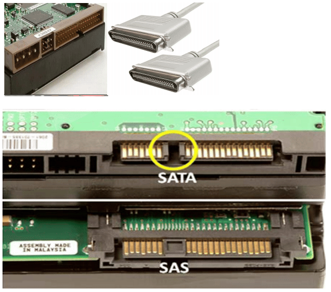
硬盘接口类型
- IDE：133MB/s，并行接口，早期家用电脑
- SCSI：640MB/s，并行接口，早期服务器
- SATA：6Gbps，SATA数据端口与电源端口是分开的，即需要两条线，一条数据线，一条电源线
- SAS：6Gbps，SAS是一整条线，数据端口与电源端口是一体化的，SAS中是包含 供电线的，而SATA中不包含供电线。SATA标准其实是SAS标准的一个子集，二 者可兼容，SATA硬盘可以插入SAS主板上，反之不成
- USB：480MB/s
- M.2：
注意：速度不是由单纯的接口类型决定，支持Nvme协议硬盘速度是最快的
服务器硬盘大小
- LFF：3.5寸，一般见到的那种台式机硬盘的大小
- SFF：Small Form Factor 小形状因数，2.5寸，注意不同于2.5寸的笔记本硬盘
L、S分别是大、小的意思，目前服务器或者盘柜采用sff规格的硬盘主要是考内 虑增大单位密度内的磁盘容量、增强散热、减小功耗
机械硬盘和固态硬盘
机械硬盘（HDD）：Hard Disk Drive，即是传统普通硬盘，主要由：盘片，磁头， 盘片转轴及控制电机，磁头控制器，数据转换器，接口，缓存等几个部分组成。 机械硬盘中所有的盘片都装在一个旋转轴上，每张盘片之间是平行的，在每个盘 片的存储面上有一个磁头，磁头与盘片之间的距离比头发丝的直径还小，所有的 磁头联在一个磁头控制器上，由磁头控制器负责各个磁头的运动。磁头可沿盘片 的半径方向运动，加上盘片每分钟几千转的高速旋转，磁头就可以定位在盘片的 指定位置上进行数据的读写操作。数据通过磁头由电磁流来改变极性方式被电磁 流写到磁盘上，也可以通过相反方式读取。硬盘为精密设备，进入硬盘的空气必 须过滤
固态硬盘（SSD）：Solid State Drive，用固态电子存储芯片阵列而制成的硬盘， 由控制单元和存储单元（FLASH芯片、DRAM芯片）组成。固态硬盘在接口的规范 和定义、功能及使用方法上与普通硬盘的完全相同，在产品外形和尺寸上也与普 通硬盘一致相较于HDD，SSD在防震抗摔、传输速率、功耗、重量、噪音上有明显 优势，SSD传输速率性能是HDD的2倍
固态中支持NVMe通道协议的速度理快
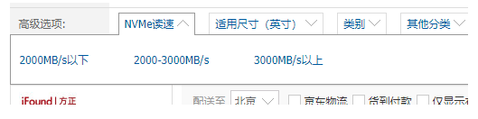
相较于SSD，HDD在价格、容量占有绝对优势
硬盘有价，数据无价，目前SSD不能完全取代HHD
机械硬盘结构

固态硬盘（SSD）
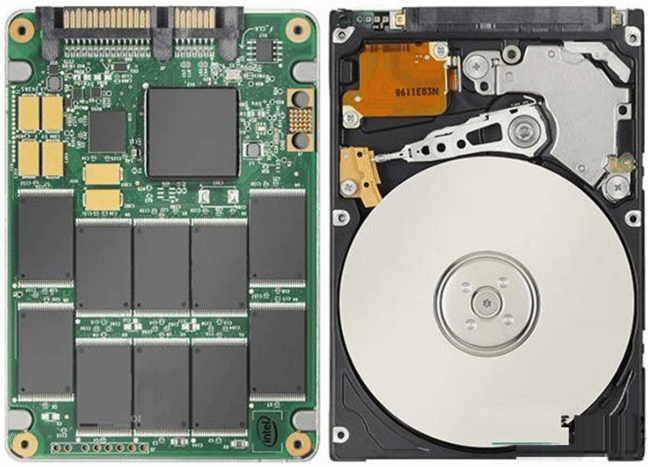
硬盘存储术语
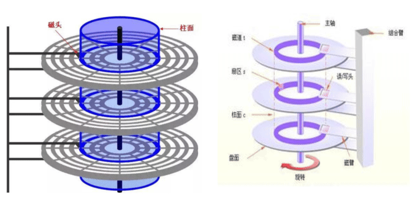
硬盘存储术语 CHS
- head：磁头 磁头数=盘面数
- track：磁道 磁道=柱面数
- sector：扇区，512bytes
- cylinder：柱面 1柱面=512 * sector数/track/head数=512/63*255=7.84M CentOS 5 之前版本 Linux 以柱面的整数倍划分分区，CentOS 6之后可以支持 以扇区划分分区
范例
[root@centos6 ~]#echo "scale=2;512*63*255/1024/1024" |bc 7.84 #查看CHS [root@centos6 ~]#fdisk -l /dev/sda # centos6还是老的方式，以柱面划分分区 Disk /dev/sda: 214.7 GB, 214748364800 bytes 255 heads, 63 sectors/track, 26108 cylinders Units = cylinders of 16065 * 512 = 8225280 bytes Sector size (logical/physical): 512 bytes / 512 bytes I/O size (minimum/optimal): 512 bytes / 512 bytes Disk identifier: 0x0006fc79 Device Boot Start End Blocks Id System /dev/sda1 * 1 131 1048576 83 Linux Partition 1 does not end on cylinder boundary. /dev/sda2 131 12879 102400000 83 Linux /dev/sda3 12879 19253 51200000 83 Linux /dev/sda4 19253 26109 55065600 5 Extended /dev/sda5 19254 19515 2097152 82 Linux swap / Solaris # centos7开始以扇区划分分区 [root@centos8 ~]#fdisk -u=cylinder -l /dev/sda # -u=cylinder 显示柱面信息 [root@node01 ~]# fdisk -l Disk /dev/sda: 10.7 GB, 10737418240 字节, 20971520 sectors扇区 # /dev/sda设备上一共多少字节、多少扇区 Units = sectors of 1 * 512 = 512 bytes # 每一个扇区是 512 字节 Sector size (logical/physical): 512 bytes / 512 bytes I/O size (minimum/optimal): 512 bytes / 512 bytes Disk label type: dos Disk identifier: 0x000cfd1f //磁盘标识符 Device Boot Start End Blocks Id System /dev/sda1 * 2048 1026047 512000 83 Linux /dev/sda2 1026048 20971519 9972736 8e Linux LVM 分区信息解释： boot : 星号标识引导分区：操作系统在这个分区上装着 start-end : cento6标识柱面的起始位置，centos7则是标识扇区的起始位置 blocks : 设备上一共多少个块，以1K为单位 id : 表示分区所在场景类型；Linux正常分区都用83来表示，扩展5,交换分区82 。 83为16进制的数字； System : 解释id所对应的意义是什么 。主分区linux、扩展分区Extended、Linux LVM # awk 'BEGIN{a=512000;printf "%sgb",a/1024/1024}' 0.488281gb
范例：识别SSD和机械硬盘类型
#1表示机械，0表示SSD [root@centos8 ~]#lsblk -d -o name,rota NAME ROTA sda 1 sr0 1 nvme0n1 0 nvme0n2 0 [root@centos8 ~]#ls /sys/block/ nvme0n1 nvme0n2 sda sr0 [root@centos8 ~]#cat /sys/block/*/queue/rotational 0 0 1 1 [root@centos8 ~]#cat /sys/block/sda/queue/rotational 1 [root@centos8 ~]#cat /sys/block/sr0/queue/rotational 1 [root@centos8 ~]#cat /sys/block/nvme0n1/queue/rotational 0 [root@centos8 ~]#cat /sys/block/nvme0n2/queue/rotational 0
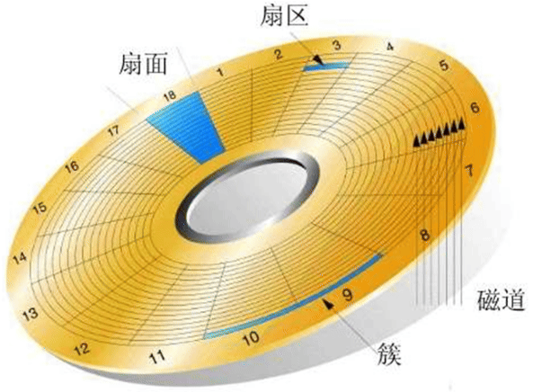
区位记录磁盘扇区结构ZBR（Zoned Bit Recording）
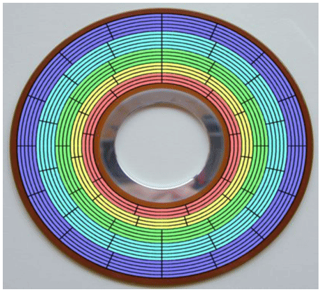
内外分的扇区个数不一样
CHS
- 传统的CHS采用 24 bit位寻址
- 其中前10位表示cylinder，中间8位表示head，后面6位表示sector
最大寻址空间 8 GB
# echo 2^24*512/1024/1024|bc 8192
这样硬盘容量太小，后面就用LBA了
LBA（logical block addressing）
- LBA是一个整数，通过转换成 CHS 格式完成磁盘具体寻址
- ATA-1规范中定义了28位寻址模式，以每扇区512位组来计算，ATA-1所定义的 28位LBA上限达到128 GiB。2002年ATA-6规范采用48位LBA，同样以每扇区512 位组计算容量上限可达128Petabytes
由于CHS寻址方式的寻址空间在大概8GB以内，所以在磁盘容量小于大概8GB时， 可以使用CHS寻址方式或是LBA寻址方式；在磁盘容量大于大概8GB时，则只能使 用LBA寻址方式
硬盘读数据快慢因素
- 询道时间
- 旋转时间。第1个数据到第2个数据磁头转动
- 读写时间
磁盘转速越快，读数据花时间就越少
小技巧：数据放在磁盘外圈更快，编号越小是外圈越大是里圈。那么sda1比sda5 读取数据速度要快。固态硬盘没有机械移动的过程不存在这个情况。
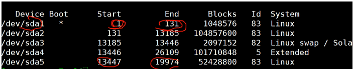
机械硬盘数据可恢复率比固态好，固态硬件坏了数据可能完全丢失。
管理存储
使用磁盘空间过程
- 设备分区
- 创建文件系统
- 挂载新的文件系统
磁盘分区
为什么分区
- 优化I/O性能
- 实现磁盘空间配额限制
- 提高修复速度
- 隔离系统和程序
- 安装多个OS
- 采用不同文件系统
分区方式
两种分区方式：MBR，GPT
- MBR分区
MBR：Master Boot Record，1982年，使用32位表示扇区数，分区不超过2T
# echo 2^32*512/1024/1024/1024|bc 2048
划分分区的单位：
- CentOS 5 之前按整柱面划分
- CentOS 6 版本后可以按Sector划分
0磁道0扇区：512bytes
- 446bytes: boot loader
- 64bytes：分区表，其中每16bytes标识一个分区，因此只能存放4个分区信息
- 2bytes: 55AA 表示硬盘是有分区的
MBR分区中一块硬盘最多有4个主分区，也可以3主分区+1扩展(N个逻辑分区)
MBR分区：主和扩展分区对应的1–4，/dev/sda3，逻辑分区从5开始，/dev/sda5
MBR分区结构
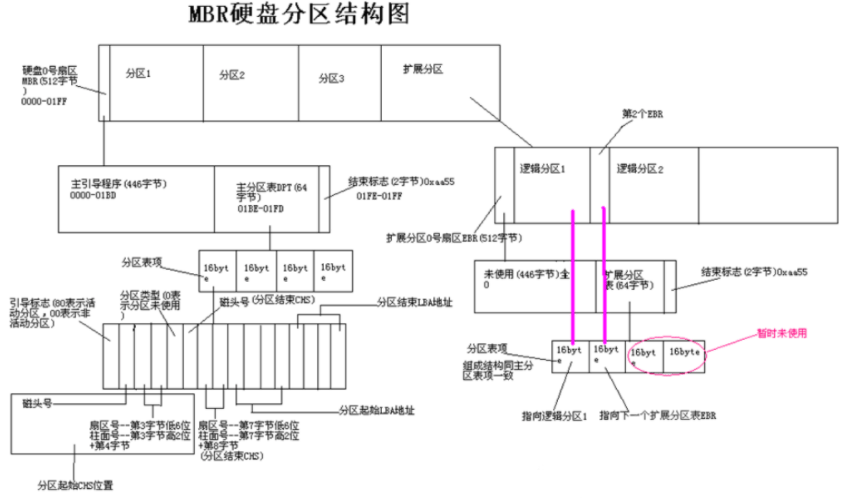
- 一个字节 = 8位（8个二进制位） 1Byte = 8bit；
- 一个十六进制 = 4个二进制位
- 一个字节 = 2个十六进制
hexdump -C -n 512 /dev/vda # 查看磁盘MBR分区信息
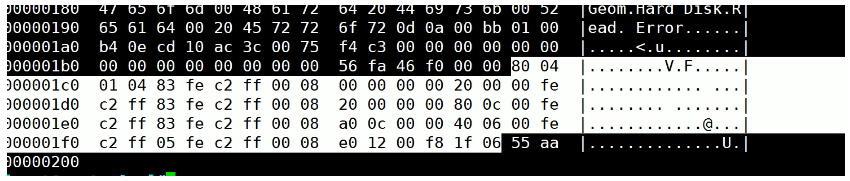
Figure 4: image-20210216020715868 硬盘主引导记录MBR由4个部分组成
- 主引导程序（偏移地址0000H–0088H），它负责从活动分区中装载，并运行系 统引导程序
- 出错信息数据区，偏移地址0089H–00E1H为出错信息，00E2H–01BDH全为0字节
- 分区表（DPT,Disk Partition Table）含4个分区项，偏移地址01BEH–01FDH, 每个分区表项长16个字节，共64字节为分区项1、分区项2、分区项3、分区项4
- 结束标志字，偏移地址01FE–01FF的2个字节值为结束标志55AA
MBR中DPT结构
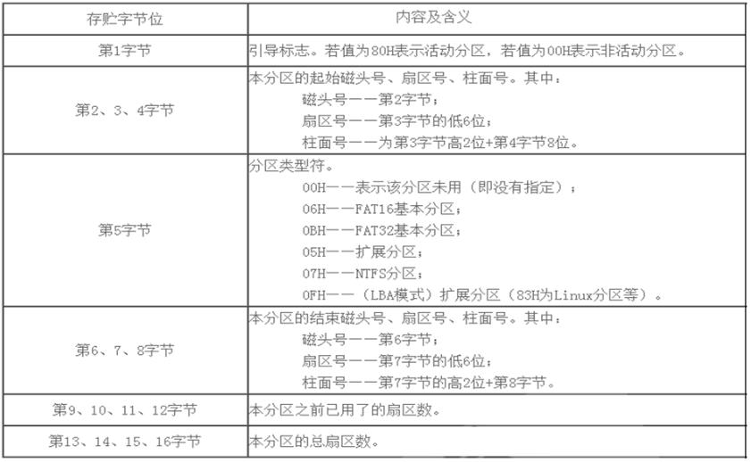
范例: 备份MBR的分区表,并破坏后恢复
#备份MBR分区表 dd if=/dev/sda of=/data/dpt.img bs=1 count=64 skip=446 # skip跳过源前446个字节，只备份分区表 cp /data/dpt.img 10.0.0.102:~ hexdump -C /data/dpt.img # 以16进制查看文件 #破坏MBR分区表 [root@centos8 ~]#dd if=/dev/zero of=/dev/sda bs=1 count=64 seek=446 # seek 目标的前446个字节跳过 #无法启动 [root@centos8 ~]#reboot #用光盘启动,进入rescue mode,选第3项skip to shell #配置网络 #ifconfig ens160 10.0.0.8/24 #ip a a 10.0.0.8/24 dev/ens160 #scp 10.0.0.102:/root/dpt.img . #恢复MBR分区表 #dd if=dpt.img of=/dev/sda bs=1 seek=446 #exit
问题：利用分区策略相同的另一台主机的分区表来还原和恢复当前主机破环的分区表？
- GPT分区
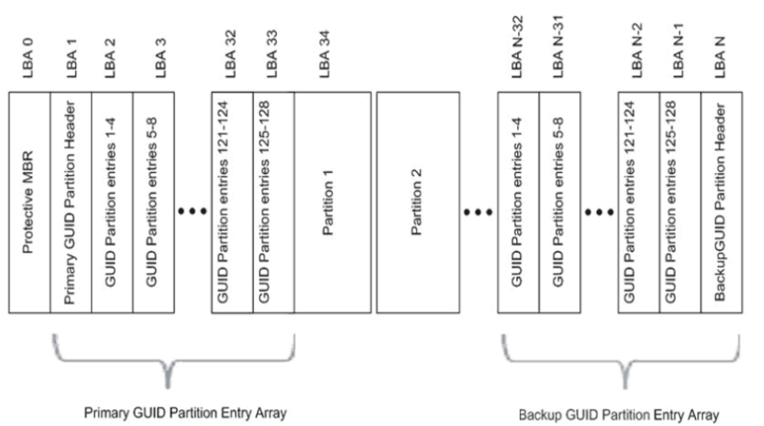
Figure 5: image-20210216020756367 GPT：GUID（Globals Unique Identifiers） partition table支持128个分区， 使用64位，支持8Z（512Byte/block ）64Z （ 4096Byte/block）
使用128位UUID(Universally Unique Identifier) 表示磁盘和分区 GPT分区表自动备份在头和尾两份，并有CRC校验位
UEFI (Unified Extensible Firmware Interface 统一可扩展固件接口)硬件支持GPT，使得操作系统可以启动
GPT分区结构
GPT分区结构分为4个区域：
- GPT头
- 分区表
- GPT分区
- 备份区域
BIOS和UEFI
BIOS是固化在电脑主板上的程序，主要用于开机系统自检和引导操作系统。目前 新式的电脑基本上都是UEFI启动
BIOS（Basic Input Output System基本输入输出系统）主要完成系统硬件自检 和引导操作系统，操作系统开始启动之后，BIOS的任务就完成了。系统硬件自检： 如果系统硬件有故障，主板上的扬声器就会发出长短不同的”滴滴”音，可以简 单的判断硬件故障，比如”1长1短”通常表示内存故障，"1长3短"通常表示显卡 故障
BIOS在1975年就诞生了，使用汇编语言编写，当初只有16位，因此只能访问1M的 内存，其中前640K称为基本内存，后384K内存留给开机和各类BIOS本身使用。 BIOS只能识别到主引导记录（MBR）初始化的硬盘，最大支持2T的硬盘，4个主分 区（逻辑分区中的扩展分区除外），而目前普遍实现了64位系统，传统的BIOS已 经无法满足需求了，这时英特尔主导的EFI就诞生了
EFI（Extensible Firmware Interface）可扩展固件接口，是 Intel 为 PC固件 的体系结构、接口和服务提出的建议标准。其主要目的是为了提供一组在 OS加 载之前（启动前）在所有平台上一致的、正确指定的启动服务，被看做是BIOS的 继任者，或者理解为新版BIOS。
UEFI是由EFI1.10为基础发展起来的，它的所有者已不再是Intel，而是一个称作 Unified EFI Form的国际组织
UEFI(Unified Extensible Firmware Interface)统一的可扩展固件接口，是一 种详细描述类型接口的标准。UEFI相当于一个轻量化的操作系统，提供了硬件和 操作系统之间的一个接口，提供了图形化的操作界面。最关键的是引入了GPT分 区表，支持2T以上的硬盘，硬盘分区不受限制
BIOS和UEFI区别
BIOS采用了16位汇编语言编写，只能运行在实模式（内存寻址方式由16位段寄存 器的内容乘以16(10H)当做段基地址，加上16位偏移地址形成20位的物理地址） 下，可访问的内存空间为1MB，只支持字符操作界面
UEFI采用32位或者64位的C语言编写，突破了实模式的限制，可以达到最大的寻 址空间，支持图形操作界面，使用文件方式保存信息，支持GPT分区启动，适合 和较新的系统和硬件的配合使用
BIOS+MBR与UEFI+GPT
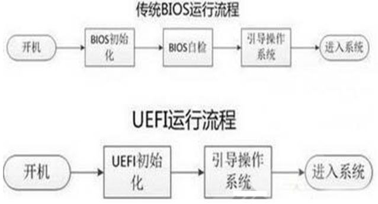
管理分区
列出块设备
lsblk -f ：同时列出该磁盘内的文件系统名称 **
创建分区命令
fdisk 管理MBR分区 gdisk 管理GPT分区 parted 高级分区操作，可以是交互或非交互方式
重新设置内存中的内核分区表版本，适合于除了CentOS 6 以外的其它版本 5，7，8
partprobe
不重启Linux识别新添加的硬盘
ls –l /sys/class/scsi_host/ 查看有几个host文件使用命令扫描： echo '- - -' >/sys/class/scsi_host/host0/scan echo '- - -' >/sys/class/scsi_host/host1/scan echo '- - -' >/sys/class/scsi_host/host2/scan [root@centos8 ~]#alias scandisk='echo - - - >/sys/class/scsi_host/host0/scan;echo - - - >/sys/class/scsi_host/host1/scan;echo - - - > /sys/class/scsi_host/host2/scan'
- 列出块设备 lsblk
lsblk 选项与参数： -d ：仅列出磁盘本身，并不会列出该磁盘的分区数据 -f ：同时列出该磁盘内的文件系统名称 ** -i ：使用 ASCII 的线段输出，不要使用复杂的编码 （再某些环境下很有用） -m ：同时输出该设备在 /dev 下面的权限数据 （rwx 的数据） -p ：列出该设备的完整文件名！而不是仅列出最后的名字而已。 -t ：列出该磁盘设备的详细数据，包括磁盘伫列机制、预读写的数据量大小等
范例：
[root@centos7 ~]# lsblk #显示当前有多少块设备 NAME MAJ:MIN RM SIZE RO TYPE MOUNTPOINT fd0 2:0 1 4K 0 disk sda 8:0 0 120G 0 disk ├─sda1 8:1 0 512M 0 part /boot ├─sda2 8:2 0 20G 0 part / ├─sda3 8:3 0 20G 0 part /usr ├─sda4 8:4 0 1K 0 part ├─sda5 8:5 0 2G 0 part [SWAP] └─sda6 8:6 0 10G 0 part sr0 11:0 1 7.1G 0 rom #光驱 输出信息解释： NAME：就是设备的文件名！会省略 /dev 等前导目录 MAJ:MIN：分别是主要：次要设备代码 RM：是否为可卸载设备 （removable device），如光盘、USB 磁盘等等 SIZE：当然就是容量 RO：是否为只读设备的意思 TYPE：是磁盘 （disk）、分区 （partition） 还是只读存储器 （rom） 等输出 MOUTPOINT：挂载点
范例：识别SSD和机械硬盘类型
#1表示机械，0表示SSD [root@centos8 ~]#lsblk -d -o name,rota NAME ROTA sda 1 sr0 1 nvme0n1 0 nvme0n2 0
- parted 命令
注意：parted的操作都是实时生效的，小心使用
格式：
parted [选项]... [设备 [命令 [参数]...]...]
选项： -l 显示磁盘信息
范例：分区创建删除
parted /dev/sdb mklabel gpt|msdos # 创建分区表；msdos表示MBR分区 parted /dev/sdb unit mb print # 显示分区 单位显示不一致时，unit mb 指定以mb显示 parted /dev/sdb mkpart primary 1 200 # 新增分区（默认大小M）立即生效 # lsblk 、ll /dev/sdb* 、cat /proc/partitions 查看分区 parted /dev/sdb rm 1 # 删除分区 parted –l # 列出所有硬盘分区信息
范例：创建分区并格式化文件系统
mkdir /data parted /dev/vdb mklabel gpt parted -s /dev/vdb 'mkpart primary 1049k -1' # parted /dev/vdb mkpart primary xfs 0G 4398GB # parted -s /dev/vdb mkpart primary 0 100% mkfs.ext4 /dev/vdb1 #mkfs.xfs -f /dev/vdb1 # blkid echo "/dev/vdb1 /data1 ext4 defaults,nodelalloc,noatime 0 2" >>/etc/fstab mount -a
范例: 新增分区
[root@centos8 ~]#parted /dev/sdb print Partition Table: unknown [root@centos8 ~]#parted /dev/sdb mklabel gpt [root@centos8 ~]#parted /dev/sdb print Partition Table: gpt [root@centos8 ~]#parted /dev/sdb mkpart primary 1 1001 [root@centos8 ~]#parted /dev/sdb print Model: VMware, VMware Virtual S (scsi) Disk /dev/sdb: 21.5GB Sector size (logical/physical): 512B/512B Partition Table: gpt Disk Flags: Number Start End Size File system Name Flags 1 1049kB 1001MB 1000MB primary [ 1 ] [ 2 ] [ 3 ] [ 4 ] [ 5 ] [ 6 ] 1. Number：这个就是分区的号码啦！举例来说，1号代表的是 /dev/sdb1 的意思； 2. Start：分区的起始位置在这颗磁盘的多少 MB 处？ 3. End：此分区的结束位置在这颗磁盘的多少 MB 处？ 4. Size：由上述两者的分析，得到这个分区有多少容量； 5. File system：分析可能的文件系统类型为何的意思！ 6. Name：就如同 gdisk 的 System ID 之意。 # 预留了1048k，为将来存放和计算机启动相关的东西 # 添加分区 [root@centos8 ~]#parted /dev/sdb mkpart primary 1002 1102 Information: You may need to update /etc/fstab. [root@centos8 ~]#parted /dev/sdb print Model: VMware, VMware Virtual S (scsi) Disk /dev/sdb: 21.5GB Sector size (logical/physical): 512B/512B Partition Table: gpt Number Start End Size File system Name Flags 1 1049kB 1001MB 1000MB primary 2 1002MB 1102MB 99.6MB primary [root@centos8 ~]#parted /dev/sdb rm 2 [root@centos8 ~]#parted /dev/sdb print Model: VMware, VMware Virtual S (scsi) Disk /dev/sdb: 21.5GB Sector size (logical/physical): 512B/512B Partition Table: gpt Disk Flags: Number Start End Size File system Name Flags 1 1049kB 1001MB 1000MB primary # 危险！危险！勿乱搞！无法复原！ # 更改现在分区表类型 [root@centos8 ~]#parted /dev/sdb mklabel msdos Warning: The existing disk label on /dev/sdb will be destroyed and all data on this disk will be lost. Do you want to continue? Yes/No? Y Information: You may need to update /etc/fstab. [root@centos8 ~]#parted /dev/sdb print Model: VMware, VMware Virtual S (scsi) Disk /dev/sdb: 21.5GB Sector size (logical/physical): 512B/512B Partition Table: msdos Disk Flags: Number Start End Size Type File system Flags
- 分区工具fdisk和gdisk
gdisk [device...] 类fdisk 的GPT分区工具 fdisk -l [-u] [device...] 查看分区 fdisk [device...] 管理MBR分区
子命令：
p 分区列表 t 更改分区类型 l 查看所有已知的分区类型 ID ** n 创建新分区 d 删除分区 v 校验分区 u 转换单位 w 保存并退出 q 不保存并退出
查看内核是否已经识别新的分区
cat /proc/partations
Centos6 通知内核重新读取硬盘分区表 新增分区用
partx -a /dev/DEVICE kpartx -a /dev/DEVICE -f: force #示例： [root@centos6 ~]#partx -a /dev/sda
删除分区用
partx -d --nr M-N /dev/DEVICE #示例： [root@centos6 ~]#partx -d --nr 6-8 /dev/sda
范例:非交互式创建分区
echo -e 'n\np\n\n\n+2G\nw\n' | fdisk /dev/sdc
范例:
创建扩展分区 [root@node01 ~]# fdisk /dev/sdb n 创建新分区 e 选择分区类型，p 为主分区，e 为扩展分区 Partition number (1-4, default 1): #分区编号默认 First sector (2048-41943039, default 2048): #扇区开始位置。回车为默认 Last sector, +sectors or +size{K,M,G} (2048-41943039, default 41943039): +10G #扇区结束位置。有2种方式，指定扇区和指定大小。指定大小比较方便 p 打印分区信息 Disk /dev/sdb: 21.5 GB, 21474836480 bytes, 41943040 sectors Device Boot Start End Blocks Id System /dev/sdb1 2048 20973567 10485760 5 Extended 扩展分区不能单独使用，要继续分成逻辑分区 n 创建新分区 Partition type: l logical (numbered from 5) Select (default p): l #选择分区类型，l 为逻辑分区 First sector (4096-20973567, default 4096): Using default value 4096 Last sector, +sectors or +size{K,M,G} (4096-20973567, default 20973567): +2G Command (m for help): p Disk /dev/sdb: 21.5 GB, 21474836480 bytes, 41943040 sectors Device Boot Start End Blocks Id System /dev/sdb1 2048 20973567 10485760 5 Extended /dev/sdb5 4096 4198399 2097152 83 Linux w 保存并退出 #增加了6,7分区 [root@centos6 ~]#fdisk /dev/sda Command (m for help): w The partition table has been altered! Calling ioctl() to re-read partition table. WARNING: Re-reading the partition table failed with error 16: Device or resource busy. The kernel still uses the old table. The new table will be used at the next reboot or after you run partprobe(8) or kpartx(8) Syncing disks. #分区表不同步 [root@centos6 ~]#lsblk NAME MAJ:MIN RM SIZE RO TYPE MOUNTPOINT sr0 11:0 1 3.7G 0 rom sda 8:0 0 200G 0 disk ├─sda1 8:1 0 1G 0 part /boot ├─sda2 8:2 0 97.7G 0 part / ├─sda3 8:3 0 48.8G 0 part /data ├─sda4 8:4 0 1K 0 part └─sda5 8:5 0 2G 0 part [SWAP] #同步分区表 [root@centos6 ~]#partx -a /dev/sda BLKPG: Device or resource busy error adding partition 1 BLKPG: Device or resource busy error adding partition 2 BLKPG: Device or resource busy error adding partition 3 BLKPG: Device or resource busy error adding partition 4 BLKPG: Device or resource busy error adding partition 5 [root@centos6 ~]#lsblk NAME MAJ:MIN RM SIZE RO TYPE MOUNTPOINT sr0 11:0 1 3.7G 0 rom sda 8:0 0 200G 0 disk ├─sda1 8:1 0 1G 0 part /boot ├─sda2 8:2 0 97.7G 0 part / ├─sda3 8:3 0 48.8G 0 part /data ├─sda4 8:4 0 1K 0 part ├─sda5 8:5 0 2G 0 part [SWAP] ├─sda6 8:6 0 2G 0 part └─sda7 8:7 0 3G 0 part #删除了6,7分区 [root@centos6 ~]#fdisk /dev/sda Command (m for help): w The partition table has been altered! Calling ioctl() to re-read partition table. WARNING: Re-reading the partition table failed with error 16: Device or resource busy. The kernel still uses the old table. The new table will be used at the next reboot or after you run partprobe(8) or kpartx(8) Syncing disks. [root@centos6 ~]# [root@centos6 ~]#lsblk NAME MAJ:MIN RM SIZE RO TYPE MOUNTPOINT sr0 11:0 1 3.7G 0 rom sda 8:0 0 200G 0 disk ├─sda1 8:1 0 1G 0 part /boot ├─sda2 8:2 0 97.7G 0 part / ├─sda3 8:3 0 48.8G 0 part /data ├─sda4 8:4 0 1K 0 part ├─sda5 8:5 0 2G 0 part [SWAP] ├─sda6 8:6 0 2G 0 part └─sda7 8:7 0 3G 0 part #同步分区表 [root@centos6 ~]#partx -d --nr 6-7 /dev/sda [root@centos6 ~]#lsblk NAME MAJ:MIN RM SIZE RO TYPE MOUNTPOINT sr0 11:0 1 3.7G 0 rom sda 8:0 0 200G 0 disk ├─sda1 8:1 0 1G 0 part /boot ├─sda2 8:2 0 97.7G 0 part / ├─sda3 8:3 0 48.8G 0 part /data ├─sda4 8:4 0 1K 0 part └─sda5 8:5 0 2G 0 part [SWAP]
文件系统
文件系统概念
文件系统是操作系统用于明确存储设备或分区上的文件的方法和数据结构；即在 存储设备上组织文件的方法。操作系统中负责管理和存储文件信息的软件结构称 为文件管理系统，简称文件系统
从系统角度来看，文件系统是对文件存储设备的空间进行组织和分配，负责文件 存储并对存入的文件进行保护和检索的系统。具体地说，它负责为用户建立文件， 存入、读出、修改、转储文件，控制文件的存取，安全控制，日志，压缩，加密 等
支持的文件系统：
ls /lib/modules/`uname -r`/kernel/fs
各种文件系统：https://en.wikipedia.org/wiki/Comparison_of_file_systems
帮助：man 5 fs
文件系统类型
Linux 常用文件系统
- ext2：Extended file system 适用于那些分区容量不是太大，更新也不频繁的情况，例如 /boot 分区
- ext3：是 ext2 的改进版本，其支持日志功能，能够帮助系统从非正常关机导致的异常中恢复
- ext4：是 ext文件系统的最新版。提供了很多新的特性，包括纳秒级时间戳、 创建和使用巨型文件(16TB)、最大1EB的文件系统，以及速度的提升
- xfs：SGI，支持最大8EB的文件系统
- swap
- iso9660 光盘
- btrfs（Oracle）
- reiserfs
Windows 常用文件系统
- FAT32
- NTFS
- exFAT
Unix：
- FFS（fast）
- UFS（unix）
- JFS2
网络文件系统：
- NFS
- CIFS
集群文件系统：
- GFS2
- OCFS2（oracle）
分布式文件系统：
- fastdfs
- ceph
- moosefs
- mogilefs
- glusterfs
- Lustre
RAW： 未经处理或者未经格式化产生的文件系统
常用的文件系统特性： FAT32
- 最多只能支持16TB的文件系统和4GB的文件
NTFS
- 最多只能支持16EB的文件系统和16EB的文件
EXT3
- 最多只能支持32TB的文件系统和2TB的文件，实际只能容纳2TB的文件系统和16GB的文件
- Ext3目前只支持32000个子目录
- Ext3文件系统使用32位空间记录块数量和 inode数量
- 当数据写入到Ext3文件系统中时，Ext3的数据块分配器每次只能分配一个4KB的块
EXT4：
- EXT4是Linux系统下的日志文件系统，是EXT3文件系统的后继版本
- Ext4的文件系统容量达到1EB，而支持单个文件则达到16TB
- 理论上支持无限数量的子目录
- Ext4文件系统使用64位空间记录块数量和 inode数量
- Ext4的多块分配器支持一次调用分配多个数据块
- 修复速度更快
XFS
- 根据所记录的日志在很短的时间内迅速恢复磁盘文件内容
- 用优化算法，日志记录对整体文件操作影响非常小
- 是一个全64-bit的文件系统，最大可以支持8EB的文件系统，而支持单个文件则达到8EB
- 能以接近裸设备I/O的性能存储数据
查前支持的文件系统：
cat /proc/filesystems
文件系统的组成部分
- 内核中的模块：ext4, xfs, vfat
- Linux的虚拟文件系统：VFS
- 用户空间的管理工具：mkfs.ext4, mkfs.xfs,mkfs.vfat
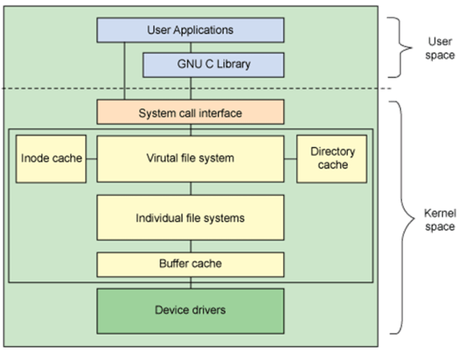
VFS: Virtual File System，不同文件系统和上层接之间口的中间层
文件系统选择管理
- 创建文件系统
创建文件管理工具
mkfs命令：
(1) mkfs.FS_TYPE /dev/DEVICE ext4 xfs btrfs vfat (2) mkfs -t FS_TYPE /dev/DEVICE -L 'LABEL' 设定卷标- mke2fs：ext系列文件系统专用管理工具
常用选项
-t {ext2|ext3|ext4|xfs} 指定文件系统类型 -b {1024|2048|4096} 指定块 block 大小 -L ‘LABEL’ 设置卷标 -j 相当于 -t ext3， mkfs.ext3 = mkfs -t ext3 = mke2fs -j = mke2fs -t ext3 -i #为数据空间中每多少个字节创建一个inode；不应该小于block大小; 默认每16kb磁盘空间分配一个inode，一个inode大小为256b -T 指定类型； -T largefile 相当于 -i 104876 -N # 指定分区中创建多少个inode -I 一个inode记录占用的磁盘空间大小，128---4096 -m # 默认5%,为管理人员预留空间占总空间的百分比，磁盘满了可操作空间大小。百分比数值；#=1,2,3...100 对于大磁盘来说预留5%给超级管理员多了。 -O FEATURE[,...] 启用指定特性 -O ^FEATURE 关闭指定特性 –O ^has_journal 表示去除日志功能 -n 模拟运行，但不格式化范例：
创建ext4 [root@node01 ~]# mkfs.ext4 /dev/sdb5 mke2fs 1.42.9 (28-Dec-2013) Filesystem label= #文件系统卷标，这里没指定 OS type: Linux # 操作系统 Block size=4096 (log=2) # 块大小，默认为 4k Fragment size=4096 (log=2) # 分块大小，默认为 4k Stride=0 blocks, Stripe width=0 blocks 131072 inodes, 524288 blocks # 一共创建多少 inode 和 block 26214 blocks (5.00%) reserved for the super user # 在block 磁盘块中预留多少给 超级管理员。对于大磁盘来说预留5%多了。 First data block=0 # 第 1 个磁盘块的编号从 0 开始 Maximum filesystem blocks=536870912 # 最大磁盘块编号 16 block groups # 磁盘块组个数 32768 blocks per group, 32768 fragments per group # 每个块组内多少块 8192 inodes per group # 每个组内有多少 inode Superblock backups stored on blocks: # superblock 被分在哪些块上了，每个块的编号 32768, 98304, 163840, 229376, 294912 Allocating group tables: done Writing inode tables: done # 正在写入 inode 表 Creating journal (16384 blocks): done # 创建日志功能 Writing superblocks and filesystem accounting information: done 查看文件系统的 TYPE 类型 [root@node01 ~]# blkid /dev/sdb5 /dev/sdb5: UUID="66d93d3e-0141-4147-ac2c-59fc811a089d" TYPE="ext4" UUID 全区唯一标识符 TYPE 文件系统类型 创建文件系统指明卷标 [root@node01 ~]# mkfs.ext4 -L MYDATA -b 1024 /dev/sdb5 [root@node01 ~]# blkid /dev/sdb5 /dev/sdb5: LABEL="MYDATA" UUID="2d6d8919-1079-4235-923f-33d655b760f2" TYPE="ext4" 创建带日志的文件系统，默认ext3文件系统 [root@node01 ~]# mke2fs -O has_journal /dev/sdb5 [root@node01 ~]# blkid /dev/sdb5 /dev/sdb5: UUID="c86bb335-6ea4-4fe6-bf4a-dfae0e9ab3eb" SEC_TYPE="ext2" TYPE="ext3" 取消日志特性 [root@node01 ~]# mke2fs -O ^has_journal /dev/sdb5 [root@node01 ~]# blkid /dev/sdb5 /dev/sdb5: UUID="6bb9e6e1-0445-4487-9a12-dd1d3e70c045" TYPE="ext2"
格式化大容量磁盘
格式化大容量磁盘，系统会分配过多inode，为inode预留过多空间，导致磁盘空 间占用特别大。
可以减小inode占用的磁盘空间，减少磁盘浪费
磁盘格式化后inode占用的磁盘空间：node数量 * 每个inode占用的空间 256b /1024 换算为kb /1024 换算为 mb
默认2TB磁盘inode占用：
mkfs.ext4 -n /dev/sdc1 122101760 inodes, 488378368 blocks # 通过以上信息可以计算出磁盘格式化后inode占用的磁盘空间 122101760 * 256 / 1024 / 1024 = 29810mb
增大
-i参数，为数据空间中每多少个字节创建一个inode：#指定1m空间分配一个inode来格式化2TB磁盘 mkfs.ext4 -i 1048576 -n /dev/sdc 1907840 inodes, 488378368 blocks #通过以上信息可以计算出磁盘格式化后inode占用的磁盘空间 1907840 * 256 / 1024 / 1024 = 465mb 更改-i参数，节省了29G空间
除了更改-i参加，也可以直接通过-T参数直接指定多大磁盘空间分配一个inode
mkfs.ext4 -T largefile -n /dev/sdc1 #几乎在几分钟完成快速格式化 mkfs.ext4 -T largefile4 -n /dev/sdc1
largefile和largefile4对应的【多大磁盘空间分配一个inode】其实是在 /etc/mke2fs.conf 定义的。
- largefile 类型就是 1M 一个 inode
- largefile4 类型就是 4M 一个 inode
mkfs.ext4 -N 314572800 -T largefile /dev/xvdb1
因为ext4无法动态调整inode空间占比，所以选择将ext4改为xfs(支持动态调整 inode空间占比)
xfs硬盘格式inode空间占比(默认为5%)
#xfs文件系统动态扩容inode空间占比为10% xfs_growfs -m 10 /minio
- 查看和管理分区信息
blkid 可以查看块设备属性信息 格式：
blkid [OPTION]... [DEVICE]
常用选项：
- -U UUID 根据指定的UUID来查找对应的设备
- -L LABEL 根据指定的LABEL来查找对应的设备 范例
[root@node01 ~]# blkid /dev/sda1: UUID="740f2026-5852-4f08-ba89-03a41da96641" TYPE="xfs" /dev/sda2: UUID="kX2LpD-lIl1-sU1x-adD3-ZZDB-S0xt-uhNESv" TYPE="LVM2_member" /dev/sr0: UUID="2017-09-06-10-53-42-00" LABEL="CentOS 7 x86_64" TYPE="iso9660" PTTYPE="dos" /dev/mapper/centos-root: UUID="00d2160a-c185-4a69-b5d0-3616bc34bdac" TYPE="xfs" /dev/mapper/centos-swap: UUID="d99a0da9-3302-46cb-905a-79c12134ee70" TYPE="swap"
e2label：管理ext系列文件系统的LABEL
e2label DEVICE [LABEL]
findfs ：查找分区
findfs [options] LABEL=<label> findfs [options] UUID=<uuid>
范例：
[root@centos8 ~]#findfs UUID=f7f53add-b184-4ddc-8d2c-5263b84d1e15 /dev/sda2tune2fs：重新设定ext系列文件系统可调整参数的值
-l 查看指定文件系统超级块信息；super block -L 'LABEL’ 修改卷标 -m # 修预留给管理员的空间百分比 -j 将ext2升级为ext3 -O 文件系统属性启用或禁用, –O ^has_journal -o 调整文件系统的默认挂载选项，–o ^acl -U UUID 修改UUID号
范例：
如1，tune2fs -l device ：查看超级块的内容 [root@node01 ~]# tune2fs -l /dev/sdb5 tune2fs 1.42.9 (28-Dec-2013) Filesystem volume name: HAHAH # 卷标 Last mounted on: <not available> # 上次什么时候挂载。 not available为不可用没挂载过 Filesystem UUID: 51f52968-de90-4595-a050-52d325f1805c # UUID全区唯一标识符 Filesystem magic number: 0xEF53 # 文件系统的魔数；文件系统专用的标识 Filesystem revision #: 1 (dynamic) Filesystem features: ext_attr resize_inode dir_index filetype sparse_super large_file # 已经启用特性 。使用 tune2fs -O [^]feature[,...] 开启或关闭某种特性 Filesystem flags: signed_directory_hash # 标志 Default mount options: user_xattr acl # 默认的挂载选项；tune2fs -o [^]mount-option[,...] ：开启或关闭某种默认挂载选项； Filesystem state: clean # 文件系统状态；clean 表示一致状态即没有文件处于损坏状态。dirty 不干净不一致状态 Errors behavior: Continue # 出现错误怎么办？continue 继续不管它 Filesystem OS type: Linux Inode count: 131072 # inode 数量 Block count: 524288 # block 数量 Reserved block count: 26214 # 预留 block 数量 Free blocks: 515284 # 空闲块数 Free inodes: 131061 # 空闲 inode 数 First block: 0 # 第 1 个块编号 Block size: 4096 # 块大小 Fragment size: 4096 # 偏移，片断大小 Reserved GDT blocks: 127 # 预留给 GDT 块组描述符的大小 Blocks per group: 32768 # 每组多少块 Fragments per group: 32768 # 每组多少片断 Inodes per group: 8192 # 每组多少 inode Inode blocks per group: 512 # 每组有多少个块是放 inode # tune2fs -j device 无损升级文件系统 mke2fs /dev/sdb5 # 创建 ext2 文件系统 [root@node01 ~]# blkid /dev/sdb5 /dev/sdb5: UUID="7a56c6bd-340c-4247-8ed8-37bb33cf0c36" TYPE="ext2" [root@node01 ~]# tune2fs -j /dev/sdb5 # 升级到 ext3 文件系统 Creating journal inode: done [root@node01 ~]# blkid /dev/sdb5 /dev/sdb5: UUID="7a56c6bd-340c-4247-8ed8-37bb33cf0c36" SEC_TYPE="ext2" TYPE="ext3 # tune2fs -m num 调整预留给超级管理员的空间百分比。从 5% -> 2% [root@node01 ~]# tune2fs -l /dev/sdb5 |grep "Reserved block count" Reserved block count: 26214 [root@node01 ~]# tune2fs -m 2 /dev/sdb5 Setting reserved blocks percentage to 2% (10485 blocks) [root@node01 ~]# tune2fs -l /dev/sdb5 |grep "Reserved block count" Reserved block count: 10485 # tune2fs -O ^has_journal 关闭文件系统日志特性 tune2fs -O ^has_journal /dev/sdb5 # tune2fs -o ^acl 关闭默认挂载项 acl tune2fs -o ^acl /dev/sdb5
dumpe2fs：显示ext文件系统信息，将磁盘块分组管理
- -h：查看超级块信息，不显示分组信息
范例：查看ext文件系统的元数据和块组信息
[root@centos8 ~]#dumpe2fs /dev/sda1 dumpe2fs 1.44.6 (5-Mar-2019) Filesystem volume name: <none> Last mounted on: /boot Filesystem UUID: 5c2216e3-ae34-444e-aa60-83cbaebb47e7 Filesystem magic number: 0xEF53 Filesystem revision #: 1 (dynamic) Filesystem features: has_journal ext_attr resize_inode dir_index filetype needs_recovery extent 64bit flex_bg sparse_super large_file huge_file dir_nlink extra_isize metadata_csum Filesystem flags: signed_directory_hash Default mount options: user_xattr acl Filesystem state: clean Errors behavior: Continue Filesystem OS type: Linux Inode count: 65536 Block count: 262144 Reserved block count: 13107 # 预留空间大小 Free blocks: 217118 Free inodes: 65227 First block: 0 Block size: 4096 Fragment size: 4096 Group descriptor size: 64 Reserved GDT blocks: 127 Blocks per group: 32768 Fragments per group: 32768 Inodes per group: 8192 Inode blocks per group: 512 Flex block group size: 16 Filesystem created: Thu Jan 16 10:39:10 2020 Last mount time: Mon Apr 13 12:03:10 2020 Last write time: Mon Apr 13 12:03:10 2020 Mount count: 6 Maximum mount count: -1 Last checked: Thu Jan 16 10:39:10 2020 Check interval: 0 (<none>) Lifetime writes: 236 MB Reserved blocks uid: 0 (user root) Reserved blocks gid: 0 (group root) First inode: 11 Inode size: 256 Required extra isize: 32 Desired extra isize: 32 Journal inode: 8 Default directory hash: half_md4 Directory Hash Seed: 5737d3fe-91ce-4cf3-bb5b-125ea41dd70f Journal backup: inode blocks Checksum type: crc32c Checksum: 0x66531756 Journal features: journal_incompat_revoke journal_64bit journal_checksum_v3 Journal size: 32M Journal length: 8192 Journal sequence: 0x00000150 Journal start: 1 Journal checksum type: crc32c Journal checksum: 0x96f6d31c Group 0: (Blocks 0-32767) Primary superblock at 0, Group descriptors at 1-1 # 主超级块在 0 组的 0 块上，GDT at 1-1 Reserved GDT blocks at 2-128 # 为 GDT 预留的块在 2-128 Block bitmap at 129 (+129), Inode bitmap at 130 (+130) # 块位图在 129，inode 位图在 130 Inode table at 131-642 (+131) # inode 表在 131 32119 free blocks, 8181 free inodes, 2 directories # 剩余的空间 block , inode Free blocks: 649-32767 # 可用块数。如果出现离散数，说明块中有碎片。 Free inodes: 12-8192 # 可用 inode 数 Group 1: (Blocks 32768-65535) Backup superblock at 32768, Group descriptors at 32769-32769 Reserved GDT blocks at 32770-32896 Block bitmap at 32897 (+129), Inode bitmap at 32898 (+130) Inode table at 32899-33410 (+131) 32125 free blocks, 8192 free inodes, 0 directories Free blocks: 33411-65535 Free inodes: 8193-16384 ... ...
xfs_info：显示示挂载或已挂载的 xfs 文件系统信息
xfs_info mountpoint|devname
范例:
# xfs_info /dev/vda1 meta-data=/dev/vda1 isize=512 agcount=4, agsize=13107136 blks = sectsz=512 attr=2, projid32bit=1 = crc=1 finobt=0 spinodes=0 data = bsize=4096 blocks=52428544, imaxpct=25 = sunit=0 swidth=0 blks naming =version 2 bsize=4096 ascii-ci=0 ftype=1 log =internal bsize=4096 blocks=25599, version=2 = sectsz=512 sunit=0 blks, lazy-count=1 realtime =none extsz=4096 blocks=0, rtextents=0
超级块和INODE TABLE
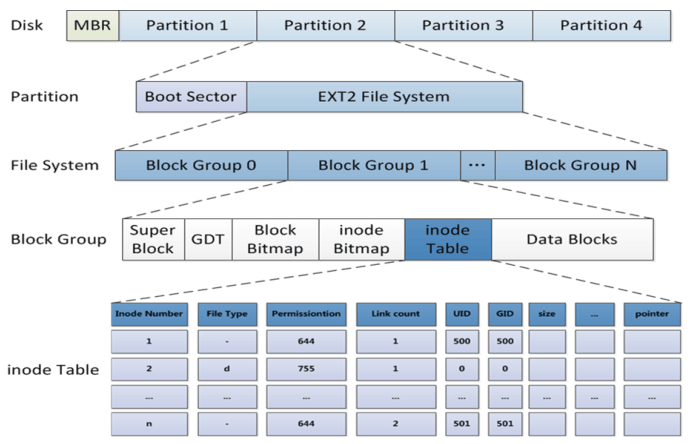
块组描述符表(GDT)
ext文件系统每一个块组信息使用32字节描述，这32个字节称为块组描述符，所 有块组的块组描述符组成块组描述符表GDT(group descriptor table)。虽然每 个块组都需要块组描述符来记录块组的信息和属性元数据，但是不是每个块组中 都存放了块组描述符。将所有块组的块组信息组成一个GDT保存,并将该GDT存放 于某些块组中，类似存放superblock和备份superblock的块
- 文件系统检测和修复
文件系统夹故障常发生于死机或者非正常关机之后，挂载为文件系统标记为”no clean”
注意：一定不要在挂载状态下执行下面命令修复
fsck: File System Check
fsck.FS_TYPE fsck -t FS_TYPE
注意：FS_TYPE 一定要与分区上已经文件类型相同 常用选项：
-a 自动修复 ;不建议用；会将碎片文件删除 -r 交互式修复错误 -f : 强制检测
e2fsck：ext系列文件专用的检测修复工具
-y 自动回答为yes -f 强制修复 -p 自动进行安全的修复文件系统问题
范例：
如，强制检测文件系统 [root@node01 ~]# e2fsck -f /dev/sdb5 e2fsck 1.42.9 (28-Dec-2013) Pass 1: Checking inodes, blocks, and sizes # 检查 inode, 块和大小 Pass 2: Checking directory structure # 检查目录结构 Pass 3: Checking directory connectivity # 检查目录连接性 Pass 4: Checking reference counts # 检查引用计数 Pass 5: Checking group summary information # 检查簇概要信息 /dev/sdb5: 11/131072 files (0.0% non-contiguous), 9004/524288 blocks
xfs_repair：xfs文件系统专用检测修复工具 常用选项：
-f 修复文件，而设备 -n 只检查 -d 允许修复只读的挂载设备，在单用户下（ init 1）修复 / 时使用，然后立即reboot 注意：xfs_repair 可以检查/修复文件系统，不过，因为修复文件系统是个很庞大的任务！因此，修复时该文件系统不能被挂载！
范例：修改破坏的ext文件系统
[root@centos8 ~]#mount /dev/sdb2 /mnt [root@centos8 ~]#cp /etc/fstab /mnt/f1 [root@centos8 ~]#cp /etc/fstab /mnt/f2 [root@centos8 ~]#ls /mnt f1 f2 lost+found # 破坏ext文件系统 [root@centos8 ~]#dd if=/dev/zero of=/dev/sdb2 bs=1M count=1 [root@centos8 ~]#ls /mnt [root@centos8 ~]#tune2fs -l /dev/sdb2 tune2fs 1.44.6 (5-Mar-2019) tune2fs: Bad magic number in super-block while trying to open /dev/sdb2 [root@centos8 ~]#df # 大小不正常了 Filesystem 1K-blocks Used Available Use% Mounted on /dev/sdb2 73786976294838107984 73786976294836115464 1976136 100% /mnt # 修复 [root@centos8 ~]#umount /mnt [root@centos8 ~]#e2fsck /dev/sdb2 -y # 修复文件系统的元数据，超级块。 能不能找回数据就看运气了 e2fsck 1.44.6 (5-Mar-2019) test was not cleanly unmounted, check forced. Pass 1: Checking inodes, blocks, and sizes Pass 2: Checking directory structure Pass 3: Checking directory connectivity Pass 4: Checking reference counts Pass 5: Checking group summary information Free blocks count wrong for group #0 (24280, counted=24281). Fix? yes Free blocks count wrong for group #1 (32511, counted=32509). Fix? yes Free blocks count wrong (498131, counted=498130). Fix? yes Free inodes count wrong for group #0 (8181, counted=8179). Fix? yes Free inodes count wrong (131061, counted=131059). Fix? yes Padding at end of inode bitmap is not set. Fix? yes test: ***** FILE SYSTEM WAS MODIFIED ***** test: 13/131072 files (0.0% non-contiguous), 26158/524288 blocks [root@centos8 ~]#tune2fs -l /dev/sdb2 tune2fs 1.44.6 (5-Mar-2019) Filesystem volume name: test Last mounted on: <not available> ... ... [root@centos8 ~]#mount /dev/sdb2 /mnt [root@centos8 ~]#ls /mnt f1 f2 lost+found [root@centos8 ~]#cat /mnt/f1 ... ... [root@centos8 ~]#
- 文件恢复
1.基于正在打开文件的删除恢复
程序要把文件内容加载到内存中才能被读取。换句话说，被进程打开的文件在内 存是有一个副本的。
演示：删除恢复
# 1. /var/log/auth.log是被rsyslog进程打开的，我们备份并删除它 root@u-18:~# cp /var/log/auth.log /root root@u-18:~# rm -f /var/log/auth.log # 2. lsof 列表出所有被进程读取的文件，能看到文件已经被删除，但内容还在内存中用到。 root@u-18:~# lsof |grep /var/log/auth.log rsyslogd 694 syslog 8w REG 8,1 138318 1704473 /var/log/auth.log (deleted) # 3. 到对应进程中找到该文件 root@u-18:~# cd /proc/694/fd root@u-18:/proc/694/fd# ll l-wx------ 1 root root 64 5月 9 00:39 8 -> '/var/log/auth.log (deleted)' # 4. 8还在内存中，所以能读取到，我们恢复看看 root@u-18:/proc/694/fd# cat 8 > /var/log/auth.log root@u-18:/proc/694/fd# diff /var/log/auth.log /root/auth.log
2.人工误删除，没被进程打开的文件恢复
2.1 使用extundelete工具
常见的开源数据恢复工具有，debugfs、R-Linux、ext3grep、extundelete 等。 ext3grep 跟 extundelete 比较常用，其中 ext3grep 只支持 ext3文件系统， extundelete 支持 ext3/ext4。
都是通过分析文件系统日志，解析出所有文件的 inode 信息，利用 inode去查 找所在 block ,利用 dd 备份出以删除的数据
# 1. 安装 # 1). epel 仓库安装 yum install epel-release yum install extundelete -y # ubuntu系统安装 # root@u-18:/proc/694/fd# apt install extundelete # 2). 源码编译安装 http://jaist.dl.sourceforge.net/project/extundelete/extundelete/0.2.4/extundelete-0.2.4.tar.bz2 yum -y install e2fsprogs-devel tar jxf extundelete-0.2.4.tar.bz2 cd extundelete-0.2.4 ./configure && make && make install # 2. 删除一个文件 root@u-18:/proc/694/fd# df -hPT /dev/sda1 ext4 69G 14G 52G 21% / root@u-18:/proc/694/fd# mkdir /data/app -pv root@u-18:/proc/694/fd# cd /data/app root@u-18:/data/app# cp /etc/fstab ./ root@u-18:/data/app# cp /var/log/auth.log ./ root@u-18:/data/app# rm -f fstab auth.log # 3. 恢复文件 # 1) 立即保证分区是只读的，或者卸载分区 root@u-18:/data/app# mount -f -o remount,ro /dev/sda1 # 2）查看删除的文件 root@u-18:/data/app# extundelete /dev/sda1 --inode 2 # 3) 切换到其它分区，执行恢复 root@u-18:/data/app# cd root@u-18:/root# extundelete /dev/sda1 --restore-all # 恢复全部 文件在RECOVERED_FIELES，进入到目录下cp要恢复的文件即可。 # 4) 分区变为读写 root@u-18:/data/app# mount -f -o remount,rw /dev/sda1
2.2.1 参数选项
--after dtime 时间参数，表示在某段时间之后被删除的文件或目录 --before dtime 时间参数，表示在某段时间之前被删除的文件或目录 常用动作 --inode ino 显示节点 ino 的信息 --block blk 显示数据块 blk 的信息 --restore-inode ino 表示恢复节点 ino 的文件，用来恢复单个文件 --restore-file path 表示恢复指定路径下的文件，用来恢复目录下所有文件 --restore-all 表示恢复所有被删除的目录跟文件
CentOS7使用Extundelete恢复误删除的文件
常见的开源数据恢复工具有，debugfs、R-Linux、ext3grep、extundelete 等。 ext3grep 跟 extundelete 比较常用，其中 ext3grep 只支持 ext3 文件系统，extundelete 支持 ext3/ext4。
都是通过分析文件系统日志，解析出所有文件的 inode 信息，利用 inode 去查找所在 block ,利用 dd 备份出以删除的数据。
# 1. 查找被删除的文件 shell > ls -id /usr/local/src 130619 /usr/local/src ## 首先查看被删除的上层目录 inode shell > extundelete /dev/mapper/vg_study-LogVol00 --inode 130619 ... File name | Inode number | Deleted status . 130619 .. 130587 package 137256 Deleted apr-1.5.1 140038 apr-util-1.5.4 535002 httpd-2.4.10 535320 pcre-8.30 656184 siege-3.0.8 656483 libmcrypt-2.5.8 144383 package.xml 146709 mysql-5.6.4-m7 140588 memcache-2.2.7 146712 php-5.4.13 667097 redis-2.2.5 269016 memcached-1.4.15 146806 libevent-master 539531 Deleted ## 可以看到被删除的目录 package 状态为 Deleted ，inode 为 137256 shell > extundelete /dev/mapper/vg_study-LogVol00 --inode 137256 ... File name | Inode number | Deleted status . 137256 .. 130573 e2p.h;54b8ac2f 137260 Deleted e2p.h 137260 mysql-5.6.4-m7.tar.gz 140630 Deleted httpd-2.4.10.tar.gz 140035 Deleted pcre-8.30.tar.gz 140036 Deleted siege-3.0.8.tar.gz 140037 Deleted libmcrypt-2.5.8.tar.bz2 144382 Deleted php-5.4.13.tar.bz2 144439 Deleted memcache-2.2.7.tgz 144381 Deleted redis-2.2.5.tgz 146713 Deleted libevent-master 539531 Deleted memcached-1.4.15.tar.gz 144377 Deleted libevent-master.zip 146863 Deleted ## 可以看到被删除的目录底下有哪些被删除的文件及 inode 号 # 2. 恢复数据 shell > extundelete /dev/mapper/vg_study-LogVol00 --restore-directory /usr/local/src/package ## 指定删除目录所在分区，--restore-directory 为恢复整个目录，后面是要恢复的目录 Would you like to continue? (y/n) y Loading filesystem metadata ... 151 groups loaded. Loading journal descriptors ... 22517 descriptors loaded. Searching for recoverable inodes in directory /usr/local/src/package ... 1679 recoverable inodes found. Looking through the directory structure for deleted files ... Block 578312 is allocated. Unable to restore inode 146713 (usr/local/src/package/redis-2.2.5.tgz): Space has been reallocated. Unable to restore inode 539531 (usr/local/src/package/libevent-master): Space has been reallocated. 1670 recoverable inodes still lost. 复制代码 ## 其中，redis-2.2.4.tgz 和 libevent-master 没有被恢复，因为 inode 被重新分配出去了... shell > cd RECOVERED_FILES/usr/local/src/package ## 恢复完成后会在当前目录下生成一个 RECOVERED_FILES 目录 shell > ls e2p.h;54b8ac2f libmcrypt-2.5.8.tar.bz2 memcached-1.4.15.tar.gz php-5.4.13.tar.bz2 libevent-master.zip memcache-2.2.7.tgz mysql-5.6.4-m7.tar.gz ## 只恢复了 7 个文件，删除的有 12 个... 使用 find 查一下没有恢复的文件的 inode 号 shell > find / -inum 140035 /usr/lib64/libe2p.so shell > find / -inum 140036 /usr/lib64/libext2fs.a shell > find / -inum 140037 /usr/lib64/libext2fs.so ## 发现 httpd 、pcre 、siege 的都被分配出去了...，现在恢复不出来的就永远没有了.. ## 所以，千万记住：万一误删除数据了，一定要第一时间将数据所在磁盘卸载或挂载为只读分区，防止写入文件 inode 被重新分配。 ## 如果误删的是根分区的数据，那么立即进去单用户模式，将根分区只读挂载。 ## 又引申出一个问题，做系统分区的时候，最好不要只分一个根分区，像这样的情况很难办... ## 第二，数据恢复软件事先装好吧.. ## 第三，删除数据时，先将要删除的数据移动到 /tmp（单独分区），然后删除或脚本定期删除 ## 第四，做好数据备份。 ## 最后，敲慢点 ！！！
2.2 linux自带工具debugfs恢复误删文件方法 不支持xfs文件格式的恢复
#1.在 /example/目录中，创建一个文件写入内容并删除 $ cd /example $ echo 22 >1.c $ rm 1.c # 2.查看文件所在分区 $ df ./ Filesystem 1K-blocks Used Available Use% Mounted on /dev/sda1 41020640 23113464 15793744 60% / # 3.启动debugfs工具 $ sudo debugfs debugfs: open /dev/sda1 debugfs: ls -d /example/ ls -d会列出此目录最近的操作，其中可以看到<num>的日志删除记录 <1590178> (4044) 1.c 记录下尖括号内的数值，按q回到debugfs。 如果结果太多，可以直接执行如下命令： echo lsdel | debugfs /dev/sda1 > lsdel.out 如此可将结果输出成本地文件 # 4 执行logdump -i <num> 显示此日志内容,并使用quit退出debugfs如下 debugfs: logdump -i <1590178> Inode 1590178 is at group 194, block 6292541, offset 128 Journal starts at block 33979, transaction 115345 No magic number at block 36187: end of journal. debugfs: quit 或者 在debugfs模式下，执行 dump <123456> /tmp/123456.bak，可将被删除的文件恢复，其中123456为被删除文件的inode号。 #4.恢复文件 $ sudo dd if=/dev/sda1 of=/tmp/example/1.c bs=128 count=1 skip=629541
挂载
挂载:将额外文件系统与根文件系统某现存的目录建立起关联关系，进而使得此 目录做为其它文件访问入口的行为
卸载:为解除此关联关系的过程
把设备关联挂载点：mount Point
挂载点下原有文件在挂载完成后会被临时隐藏，因此，挂载点目录一般为空进程 正在使用中的设备无法被卸载
挂载文件系统mount
格式：
mount [-fnrsvw] [-t vfstype] [-o options] device mountpoint
device：指明要挂载的设备
- 设备文件：例如:/dev/sda5
- 卷标：-L 'LABEL', 例如 -L 'MYDATA'
- UUID： -U 'UUID'：例如 -U '0c50523c-43f1-45e7-85c0-a126711d406e'
- 伪文件系统名称：proc, sysfs, devtmpfs, configfs
mountpoint：挂载点目录必须事先存在，建议使用空目录
mount常用命令选项
不带任何选项的命令显示当前已挂载的所有文件系统 -t vsftype 指定要挂载的设备上的文件系统类型; 多数情况下可以省略，此时mount会通过 blkid 命令来判断要挂载的设备文件类型； -r readonly，只读挂载；光驱只能只读挂载 -w read and write, 读写挂载 -n 不更新/etc/mtab，mount不可见 -a 自动挂载所有支持自动挂载的设备(定义在了/etc/fstab文件中，且挂载选项中有auto功能) -L 'LABEL' 以卷标指定挂载设备 -U 'UUID' 以UUID指定要挂载的设备 -B, --bind 绑定目录到另一个目录上; 作为其临时访问入口 -o options：(挂载文件系统的选项)，多个选项使用逗号分隔 async 异步模式,内存更改时,写入缓存区buffer,过一段时间再写到磁盘中，效率高，但不安全 sync 同步模式,内存更改时，同时写磁盘，安全，但效率低下 atime/noatime 包含目录和文件读时间，文件的读时间一般意义不大可以去掉noatime，减少磁盘IO读写。 diratime/nodiratime 目录的访问时间戳 auto/noauto 是否支持开机自动挂载，是否支持-a选项 exec/noexec 是否支持将文件系统上运行应用程序 dev/nodev 是否支持在此文件系统上使用设备文件 suid/nosuid 是否支持suid和sgid权限 remount 重新挂载 ro/rw 只读、读写 user/nouser 是否允许普通用户挂载此设备，/etc/fstab使用 acl/noacl 启用此文件系统上的acl功能 loop 使用loop设备，必需有文件系统的文件 _netdev 当网络可用时才对网络资源进行挂载，如：NFS文件系统 defaults 相当于rw, suid, dev, exec, auto, nouser, async #透明压缩机制：传的数据会被压缩之后存放 命令：mount -o compress={lzo|zlib} DEVICE MOUNT_POINT
同步异步：进程每一次所访问的数据默认都应该在磁盘上的，但是进程是不可能 操作磁盘上的数据，它需要把数据先装入到内存中，在内存中执行读写操作，尤 其是写操作。
如何写呢？ 先在内存中写完，过一会再同步到磁盘上，这叫异步。 如果在内存中一写立即同步到磁盘上，这叫同步。
想一下，内存是比磁盘快得多，异步性能更好。
挂载规则:
- 一个挂载点同一时间只能挂载一个设备
- 一个挂载点同一时间挂载了多个设备，只能看到最后一个设备的数据，其它设 备上的数据将被隐藏
- 一个设备可以同时挂载到多个挂载点
- 通常挂载点一般是已存在空的目录
范例：
# 1. 绑定目录; 通过 /mnt 目录来访问 /etc 目录 [root@node01 mnt]# mount --bind /etc/ /mnt # 2 挂载设备 [root@node01 ~]# mount /dev/sdb5 /mnt/ # 3 只读挂载 [root@node01 ~]# mount -r /dev/sdb5 /media # 4 -o options 指明挂载时系统启用的特性 acl：支持使用fac 文件访问控件列表 功能；有 2 种方式实现 1、# mount -o acl device dir 2、# tune2fs -o acl device # 修改后，mount 命令不会显示有 acl ，但其实有 acl 功能。 单用户模式下以rw方式重新挂载 / mount -o remount,rw / # 5 挂载光盘： mount -r /dev/cdrom 挂载点 光盘设备文件：/dev/cdrom,/dev/dvd [root@node01 mnt]# ls -l /dev/cdr* lrwxrwxrwx 1 root root 3 Jan 18 23:24 /dev/cdrom -> sr0 # sr0 其实是 SATA 接口的光驱设备 。 sr0 可能是 hdc，被虚拟成 IDE 接口了 ###### 挂载光盘设备： 光盘设备文件： IDE: /dev/hdc SATA: /dev/sr0 符号链接文件： /dev/cdrom /dev/cdrw /dev/dvd /dev/dvdrw # 6 挂载U盘： 事先识别U盘设备文件； # 6 挂载本地的回环设备：可以用文件当模拟硬盘用 # 注意：本地回环设备未必都是 ISO 镜像，可以是 image 文件 dd if=/dev/zero of=/disk.iso bs=1M count=100 mkfs.ext4 /disk.iso mount -o loop /disk.iso /media losetup - set up and control loop devices losetup -a: 显示所有已用的loop设备相关信息 losetup -f: 显示第一个空闲的loop设备文件 losetup /dev/loop0 /images/xen/busybox3.img # NAS挂载 mount -t nfs -o vers=4,minorversion=0,rsize=1048576,wsize=1048576,hard,timeo=600,retrans=2,noresvport file-system-id.region.nas.aliyuncs.com:/ /mnt 参数说明： rsize：定义数据块的大小，用于客户端与文件系统之间读取数据。建议值：1048576。 wsize：定义数据块的大小，用于客户端与文件系统之间写入数据。建议值：1048576。 说明 如果您需要更改IO大小参数（rsize和wsize），建议您尽可能使用最大值（1048576），以避免性能下降。 hard：在文件存储NAS暂时不可用的情况下，使用文件系统上某个文件的本地应用程序时会停止并等待至该文件系统恢复在线状态。建议启用该参数。 timeo：指定时长，单位为0.1秒，即NFS客户端在重试向文件系统发送请求之前等待响应的时间。建议值：600（60秒）。 说明 如果您必须更改超时参数（timeo），建议您使用150或更大的值。该timeo参数的单位为0.1秒，因此150表示的时间为15秒。 retrans：NFS客户端重试请求的次数。建议值：2。 noresvport：在网络重连时使用新的TCP端口，保障在网络发生故障恢复时不会中断连接。建议启用该参数。 _netdev 防止客户端在网络就绪之前开始挂载文件系统。 /etc/fstab最后2列 0（noresvport后第一项） 非零值表示文件系统应由dump备份。对于NAS文件系统而言，此值默认为0。 0（noresvport后第二项） 该值表示fsck在启动时检查文件系统的顺序。对于NAS文件系统而言，此值默认为0，表示fsck不应在启动时运行 # smba挂载 mount -t cifs //xxx-crf23.eu-west-1.nas.aliyuncs.com/myshare /mnt -o vers=2.1,guest,uid=0,gid=0,dir_mode=0755,file_mode=0755,mfsymlinks,cache=strict,rsize=1048576,wsize=1048576 参数说明： vers：支持2.1或者3.0协议版本。 guest：在认证方面，现在只支持基于ntlm认证协议的guest挂载。即使用username=guest、password=guest或者guest。 说明 服务器支持ntlm,ntlmv2和ntlmssp。默认时，SMB客户端和服务器会协商一个可接受的ntlm认证协议；或者您在挂载时，通过sec <option>可以选择一个期望值（ntlm、ntlmv2 或者ntlmssp）。 rsize：用来设置读数据包的最大限制。一般需要设置成1048576（1 MB）。 wsize：用来设置写数据包的最大限制，一般需要设置成1048576（1 MB）。 uid：挂载成功后，文件所属的用户。如果未设置uid，则默认uid=0。 gid：挂载成功后，文件所属的用户组。如果未设置gid，则默认gid=0。 dir_mode：向用户授予目录的读取、写入和执行权限。必须以0开头，例如：0755、0644等。如果未设置dir_more，则默认dir_mode=0755。 file_mode：向用户授予普通文件的读取、写入和执行权限。必须以0开头，例如：0755、0644等。如果未设置file_mode，则默认file_mode=0755。 mfsymlinks：用以支持symbol link功能。 cache： cache=strict：设置SMB客户端使用客户端缓存。如果未设置cache，则默认cache=strict。 cache=none：设置SMB客户端不使用客户端缓存。 atime|relatime：如果您的业务不是对文件的访问时间极为敏感，请不要在挂载时使用atime选项，默认时会使用relatime方式挂载。
卸载文件系统 umount
卸载时：可使用设备，也可以使用挂载点
umount 设备名|挂载点
查看挂载情况
查看挂载
#通过查看/etc/mtab文件显示当前已挂载的所有设备 mount #查看内核追踪到的已挂载的所有设备 cat /proc/mounts
查看挂载点情况
findmnt MOUNT_POINT|device
查看正在访问指定文件系统的进程
lsof MOUNT_POINT fuser -v MOUNT_POINT
终止所有在正访问指定的文件系统的进程
fuser -km MOUNT_POINT
持久挂载
将挂载保存到 /etc/fstab 中可以下次开机时，自动启用挂载
/etc/fstab格式帮助：
man 5 fstab
每行定义一个要挂载的文件系统,，其中包括共 6 项
要挂载的设备或伪文件系统 设备文件
LABEL：LABEL="" UUID：UUID="" 伪文件系统名称：proc, sysfs 推荐用UUID，写设备名的可能不稳定，尤其是逻辑卷，原来是5，6把5删除了6就变成了5
- 挂载点：必须是事先存在的目录
- 文件系统类型：ext4，xfs，iso9660，nfs，none
- 挂载选项：defaults ，acl，bind
- 转储频率：0：不做备份 1：每天转储 2：每隔一天转储
- fsck检查的文件系统的顺序：允许的数字是0 1 2 0：不自检 ，1：首先自检；一般只有rootfs才用 2：非rootfs使用
添加新的挂载项，需要执行下面命令生效
mount -a
范例：vim读书入设备信息
vim /etc/fstab :r!blkid /dev/sdb1
范例：centos7, 8 /etc/fstab 的分区UUID错误，无法启动
自动进入emergency mode故障模式,输入root 密码 #cat /proc/mounts 可以查看到/ 以rw方式挂载 #vim /etc/fstab #reboot
范例：centos 6 /etc/fstab 的分区UUID错误，无法启动
如果/etc/fstab 的挂载设备出错，比如文件系统故障，并且文件系统检测项（即第6项为非0），将导致无法启动 自动进入emergency mode,输入root 密码 #cat /proc/mounts 可以查看到/ 以ro方式挂载，无法直接修改配置文件 #mount -o remount,rw / #vim /etc/fstab 将故障行的最后1项，即第6项修改为0，开机不检测此项挂载设备的健康性，从而忽略错误，能实现启动
范例：/etc/fstab格式
[root@centos8 ~]#cat /etc/fstab
UUID=cb7cae1e-d227-4f64-872b-cd6cce20c911 /data/mysql ext4 noatime 0 0
/disk.img data/disk xfs defaults 0 0
/etc /mnt/etc none bind 0 0
[root@centos6 ~]#cat /etc/fstab
/disk.img /mnt/disk ext4 loop 0 0
处理交换文件和分区
swap 介绍
swap交换分区是系统RAM的补充，swap 分区支持虚拟内存。当没有足够的 RAM保 存系统处理的数据时会将数据写入 swap 分区，当系统缺乏 swap空间时，内核 会因 RAM 内存耗尽而终止进程。配置过多 swap空间会造成存储设备处于分配状 态但闲置，造成浪费，过多 swap空间还会掩盖内存泄露
注意：为优化性能，可以将swap 分布存放，或高性能磁盘存放
官方推荐推荐系统 swap 空间
| 系统中的 RAM 量 | 推荐的 swap 空间 | 允许休眠的建议 swap 空间大小 |
|---|---|---|
| 低于 2 GB | RAM 量的2倍数 | RAM 容量的三倍 |
| 2 GB - 8 GB | 等于 RAM 量 | RAM 量的倍数 |
| 8 GB - 64 GB | 4 GB 到 RAM 容量的 0.5 倍 | RAM 容量的 1.5 倍 |
| 超过 64 GB | 独立负载（至少 4GB） | 不建议使用休眠功能 |
交换分区实现过程
- 创建交换分区或者文件
- 使用mkswap写入特殊签名
- 在/etc/fstab文件中添加适当的条目
- 使用swapon -a 激活交换空间
启用swap分区
swapon [OPTION]... [DEVICE]
选项：
-a：激活所有的交换分区
-p PRIORITY：指定优先级，也可在/etc/fstab 在第4列指定：pri=value
范例:创建swap分区
[root@centos8 ~]#echo -e 'n\np\n\n\n+2G\nt\n82\nw\n' | fdisk /dev/sdc [root@centos8 ~]#mkswap /dev/sdc1 Setting up swapspace version 1, size = 2 GiB (2147479552 bytes) no label, UUID=d3140a7a-65b7-4cb7-8a2b-12d38aa98c6f [root@centos8 ~]#blkid /dev/sdc1 /dev/sdc1: UUID="d3140a7a-65b7-4cb7-8a2b-12d38aa98c6f" TYPE="swap" PARTUUID="b094d43d-01 [root@centos8 ~]#vim /etc/fstab UUID=d3140a7a-65b7-4cb7-8a2b-12d38aa98c6f swap swap defaults 0 0 [root@centos8 ~]#swapon -a [root@centos8 ~]#free -h total used free shared buff/cache available Mem: 3.7Gi 264Mi 3.2Gi 9.0Mi 261Mi 3.2Gi Swap: 4.0Gi 0B 4.0Gi [root@centos8 ~]#cat /proc/swaps Filename Type Size Used Priority /dev/sda5 partition 2097148 0 -2 /dev/sdc1 partition 2097148 0 -3
禁用swap分区：
swapoff [OPTION]... [DEVICE]
范例:禁用swap分区
[root@centos8 ~]#sed -i.bak '/swap/d' /etc/fstab
[root@centos8 ~]#swapoff -a
SWAP的优先级
可以指定swap分区0到32767的优先级，值越大优先级越高
如果用户没有指定，那么核心会自动给swap指定一个优先级，这个优先级从-1开 始，每加入一个新的
没有用户指定优先级的swap，会给这个优先级减一
先添加的swap的缺省优先级比较高，除非用户自己指定一个优先级，而用户指定 的优先级(是正数)永远高于核心缺省指定的优先级(是负数)
swap的使用策略
/proc/sys/vm/swappiness 的值决定了当内存占用达到一定的百分比时，会启用swap分区的空间
范例：
[root@centos8 ~]# cat /proc/sys/vm/swappiness 30 [root@rhel5 ~]# cat /proc/sys/vm/swappiness 60
说明：内存在使用到100-30=70%的时候，就开始出现有交换分区的使用。简单地 说这个参数定义了系统对swap的使用倾向，默认值为30，值越大表示越倾向于使 用swap。可以设为0，这样做并不会禁止对swap的使用，只是最大限度地降低了 使用swap的可能性
移动介质
挂载意味着使外来的文件系统看起来如同是主目录树的一部分，所有移动介质也 需要挂载，挂载点通常在/media或/mnt下
访问前，介质必须被挂载
摘除时，介质必须被卸载
按照默认设置，非根用户只能挂载某些设备（光盘、DVD、软盘、USB等等）
使用光盘
在图形环境下自动启动挂载/run/media/
手工挂载
mount /dev/cdrom /mnt/
操作光盘
eject 弹出光盘 eject -t 弹入光盘
创建ISO文件
cp /dev/cdrom /root/centos.iso mkisofs -r -o /root/etc.iso /etc #来自于genisoimage包
刻录光盘
wodim –v –eject centos.iso
USB介质
查看USB设备是否识别
lsusb
被内核探测为SCSI设备
/dev/sdaX 、 /dev/sdbX 或类似的设备文件
在图形环境中自动挂载在/run/media//
手动挂载
mount /dev/sdX# /mnt
范例：插入U盘后可以看到日志信息
#tail /var/log/messages -f dmesg
范例：格式化U盘为 FAT32 文件系统
[root@centos8 ~]#dnf -y install dosfstools [root@centos8 ~]#mkfs.vfat /dev/sdd1 mkfs.fat 4.1 (2017-01-24) [root@centos8 ~]#mount /dev/sdd1 /mnt
范例：查看USB设备
[root@centos8 ~]#yum -y install usbutils [root@centos8 ~]#lsusb Bus 004 Device 002: ID 0951:1666 Kingston Technology DataTraveler 100 G3/G4/SE9G2 Bus 004 Device 001: ID 1d6b:0003 Linux Foundation 3.0 root hub Bus 003 Device 001: ID 1d6b:0002 Linux Foundation 2.0 root hub Bus 001 Device 001: ID 1d6b:0002 Linux Foundation 2.0 root hub Bus 002 Device 003: ID 0e0f:0002 VMware, Inc. Virtual USB Hub Bus 002 Device 002: ID 0e0f:0003 VMware, Inc. Virtual Mouse Bus 002 Device 001: ID 1d6b:0001 Linux Foundation 1.1 root hub
- 制作U盘启动安装CentOS
方法一：使用UltraISO，将u盘做成启动盘
1.文件–>打开–>选择CentOS6.6的iso镜像CentOS-6.6-x86_64-bin-DVD1.iso
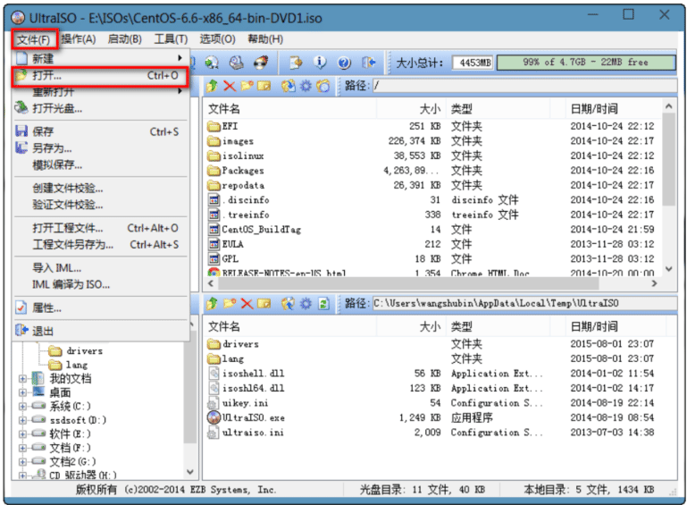
Figure 6: image-20210310162916285 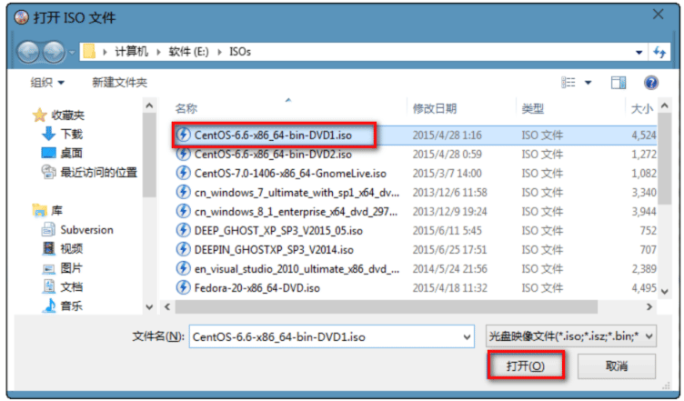
Figure 7: image-20210310162928701 2.启动–>写入硬盘映像
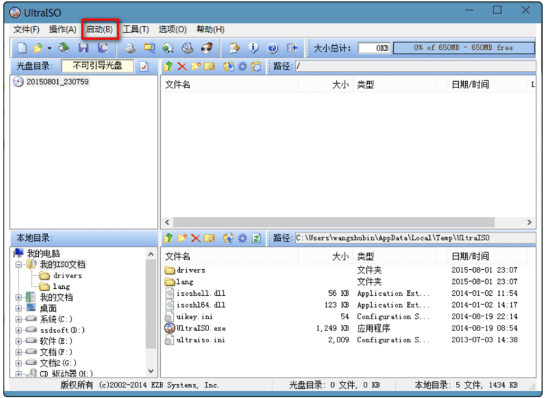
Figure 8: image-20210310162943318 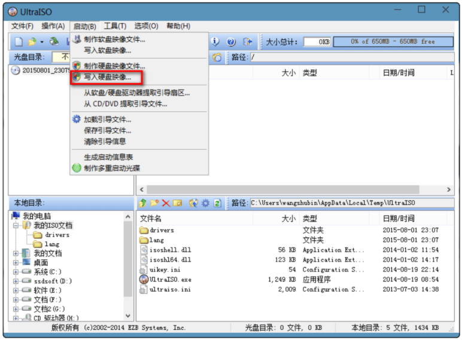
Figure 9: image-20210310162956163
磁盘常见工具
文件系统空间占用等信息的查看工具df
df [OPTION]... [FILE]...
常用选项
-H 以10为单位 -T 文件系统类型 -h human-readable -i inodes instead of blocks -P 以Posix兼容的格式输出。格式整齐些，当设备名比较长时可以放一行显示。
范例：
[root@centos8 ~]#df -Th Filesystem Type Size Used Avail Use% Mounted on /dev/sda2 xfs 100G 2.7G 98G 3% / /dev/sda3 xfs 50G 1.4G 49G 3% /data [root@centos8 ~]#lsblk -f NAME FSTYPE LABEL UUID MOUNTPOINT sda ├─sda1 ext4 5c2216e3-ae34-444e-aa60-83cbaebb47e7 /boot ├─sda2 xfs f7f53add-b184-4ddc-8d2c-5263b84d1e15 / ├─sda3 xfs 9a2293a8-9277-4b18-bae1-498e0b9da145
范例：自动识别目录所在磁盘 df -kP /path
# df -h Filesystem Size Used Avail Use% Mounted on /dev/vda1 40G 13G 25G 35% / devtmpfs 3.7G 0 3.7G 0% /dev tmpfs 3.7G 0 3.7G 0% /dev/shm tmpfs 3.7G 484K 3.7G 1% /run tmpfs 3.7G 0 3.7G 0% /sys/fs/cgroup /dev/mapper/vg_data-lv_data 89G 2.5G 82G 3% /apps # df -kP /tmp Filesystem 1024-blocks Used Available Capacity Mounted on /dev/vda1 41147472 13424504 25819476 35% / [root@ali-prod-ops-k8s-kubectl ~] eth0 = 10.16.202.198 # df -kP /apps Filesystem 1024-blocks Used Available Capacity Mounted on /dev/mapper/vg_data-lv_data 92759720 2600600 85424144 3% /apps
查看某目录总体空间占用状态du
du [OPTION]... DIR
常用选项
-h human-readable -s summary --max-depth=# 指定最大目录层级 其他 --exclude=[files] : 排除匹配文件或文件夹 -a: 递归显示指定目录中各文件和子目录中文件占用的数据块 -l: 计算所有文件大小，对硬链接文件计算多次
工具dd
dd 命令：convert and copy a file
格式：
dd if=/PATH/FROM/SRC of=/PATH/TO/DEST bs=# count=#
常用选项
if=file 从所命名文件读取而不是从标准输入 of=file 写到所命名的文件而不是到标准输出 ibs=size 一次读size个byte obs=size 一次写size个byte bs=size block size, 指定块大小（既是是ibs也是obs) cbs=size 一次转化size个byte skip=blocks 从开头忽略blocks个ibs大小的块 seek=blocks 从开头忽略blocks个obs大小的块 count=n 复制n个bs conv=conversion[,conversion...] 用指定的参数转换文件 conversion 转换参数: ascii 转换 EBCDIC 为 ASCII ebcdic 转换 ASCII 为 EBCDIC lcase 把大写字符转换为小写字符 ucase 把小写字符转换为大写字符 nocreat 不创建输出文件 noerror 出错时不停止 notrunc 不截短输出文件 sync 把每个输入块填充到ibs个字节，不足部分用空(NUL)字符补齐 fdatasync 写完成前，物理写入输出文件
两个特殊设备：
- /dev/null: 数据黑洞；类似于回收站
- /dev/zero：吐零机；该设备无穷尽地提供0,（不产生读磁盘IO）
范例:
[root@centos8 ~]#cat f1.txt; abcdef [root@centos8 ~]#cat f2.txt 123456789 [root@centos8 ~]#dd if=f1.txt of=f2.txt bs=1 count=2 skip=3 seek=4 2+0 records in 2+0 records out 2 bytes copied, 6.6515e-05 s, 30.1 kB/s [root@centos8 ~]#cat f2.txt 1234de[root@centos8 ~]#echo 123456789 > f2.txt [root@centos8 ~]#cat f2.txt 123456789 [root@centos8 ~]#cat f1.txt abcdef [root@centos8 ~]#cat f1.txt; cat f2.txt abcdef 123456789 [root@centos8 ~]#dd if=f1.txt of=f2.txt bs=1 count=2 skip=3 seek=4 conv=notrunc 2+0 records in 2+0 records out 2 bytes copied, 7.6153e-05 s, 26.3 kB/s [root@centos8 ~]#cat f2.txt 1234de789
范例：
#备份MBR dd if=/dev/sda of=/tmp/mbr.bak bs=512 count=1 #破坏MBR中的bootloader dd if=/dev/zero of=/dev/sda bs=64 count=1 seek=446 #有一个大与2K的二进制文件fileA。现在想从第64个字节位置开始读取，需要读取的大小是128Byts。又有fileB, 想把上面读取到的128Bytes写到第32个字节开始的位置，替换128Bytes，实现如下 dd if=fileA of=fileB bs=1 count=128 skip=63 seek=31 conv=notrunc #将本地的/dev/sdx整盘备份到/dev/sdy dd if=/dev/sdx of=/dev/sdy #将/dev/sdx全盘数据备份到指定路径的image文件 dd if=/dev/sdx of=/path/to/image #备份/dev/sdx全盘数据，并利用gzip压缩，保存到指定路径 dd if=/dev/sdx | gzip >/path/to/image.gz #将备份文件恢复到指定盘 dd if=/path/to/image of=/dev/sdx #将压缩的备份文件恢复到指定盘 gzip -dc /path/to/image.gz | dd of=/dev/sdx #将内存里的数据拷贝到root目录下的mem.bin文件 dd if=/dev/mem of=/root/mem.bin bs=1024 #拷贝光盘数据到root文件夹下，并保存为cdrom.iso文件 dd if=/dev/cdrom of=/root/cdrom.iso #销毁磁盘数据 dd if=/dev/urandom of=/dev/sda1 #通过比较dd指令输出中命令的执行时间，即可确定系统最佳的block size大小 dd if=/dev/zero of=/root/1Gb.file bs=1024 count=1000000 dd if=/dev/zero of=/root/1Gb.file bs=2048 count=500000 dd if=/dev/zero of=/root/1Gb.file bs=4096 count=250000 #测试硬盘写速度 dd if=/dev/zero of=/root/1Gb.file bs=1024 count=1000000 #测试硬盘读速度 dd if=/root/1Gb.file bs=64k | dd of=/dev/null
练习
- 创建一个2G的文件系统，块大小为2048byte，预留1%可用空间,文件系统ext4， 卷标为TEST，要求此分区开机后自动挂载至/test目录，且默认有acl挂载选项
- 写一个脚本，完成如下功能：
- 列出当前系统识别到的所有磁盘设备
- 如磁盘数量为1，则显示其空间使用信息 否则，则显示最后一个磁盘上的空间使用信息
- 将CentOS6的CentOS-6.10-x86_64-bin-DVD1.iso和 CentOS-6.10-x86_64-bin-DVD2.iso两个文件，合并成一个 CentOS-6.10-x86_64-Everything.iso文件，并将其配置为yum源
RAID
什么是RAID
RAID：Redundant Arrays of Inexpensive（Independent） Disks 廉价（独立）磁盘冗余阵列
1988年由加利福尼亚大学伯克利分校（University of California-Berkeley） "A Case for Redundant Arrays of Inexpensive Disks",多个磁盘合成一个” 阵列”来提供更好的性能、冗余，或者两者都提供
RAID功能实现
- 提高IO能力,磁盘并行读写
- 提高耐用性,磁盘冗余算法来实现
RAID实现的方式
- 外接式磁盘阵列：通过扩展卡提供适配能力
- 内接式RAID：主板集成RAID控制器，安装OS前在BIOS里配置
- 软件RAID：通过OS实现，比如：群晖的NAS
RAID级别
级别：多块磁盘组织在一起的工作方式有所不同
RAID-0：条带卷，strip RAID-1：镜像卷，mirror RAID-2 .. RAID-5 RAID-6 RAID-10 RAID-01 RAID级别
RAID-0
以 chunk 单位,读写数据
读、写性能提升 可用空间：N*min(S1,S2,...) 无容错能力 最少磁盘数：2, 2+
RAID-1
读性能提升、写性能略有下降 可用空间：1*min(S1,S2,...) 有冗余能力 最少磁盘数：2, 2N
RAID-4
多块数据盘异或运算值存于专用校验盘 磁盘利用率 (N-1)/N 有冗余能力 至少3块硬盘才可以实现
RAID-5
读、写性能提升 可用空间：(N-1)*min(S1,S2,...) 有容错能力：允许最多1块磁盘损坏 最少磁盘数：3, 3+
RAID-6
读、写性能提升 可用空间：(N-2)*min(S1,S2,...) 有容错能力：允许最多2块磁盘损坏 最少磁盘数：4, 4+
RAID-10
jj
读、写性能提升 可用空间：N*min(S1,S2,...)/2 有容错能力：每组镜像最多只能坏一块 最少磁盘数：4, 4+
RAID-01
多块磁盘先实现RAID0,再组合成RAID1
RAID-50
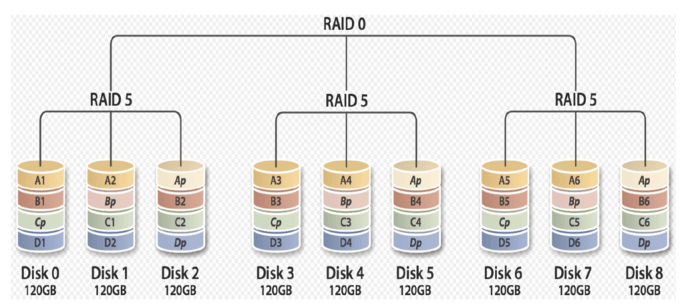
多块磁盘先实现RAID5,再组合成RAID0
其它级别
JBOD：Just a Bunch Of Disks
功能：将多块磁盘的空间合并一个大的连续空间使用
可用空间：sum(S1,S2,…)
RAID7
可以理解为一个独立存储计算机，自身带有操作系统和管理工具，可以 独立运行，理论上性能最高的RAID模式
常用级别： RAID-0, RAID-1, RAID-5, RAID-10, RAID-50, JBOD
实现软RAID
mdadm工具：为软RAID提供管理界面，为空余磁盘添加冗余，结合内核中的 md(multi devices)
RAID设备可命名为/dev/md0、/dev/md1、/dev/md2、/dev/md3等
mdadm：模式化的工具,支持的RAID级别：LINEAR, RAID0, RAID1, RAID4, RAID5, RAID6, RAID10
命令的语法格式：
mdadm [mode] <raiddevice> [options] <component-devices>
常用选项说明
模式：
创建：-C
装配：-A
监控：-F
管理：-f, -r, -a
<raiddevice>: /dev/md#
<component-devices>: 任意块设备
-C: 创建模式
-n #: 使用#个块设备来创建此RAID
-l #：指明要创建的RAID的级别
-a {yes|no}：自动创建目标RAID设备的设备文件
-c CHUNK_SIZE: 指明块大小,单位k
-x #: 指明空闲盘的个数
-D：显示raid的详细信息
mdadm -D /dev/md#
管理模式：
-f: 标记指定磁盘为损坏
-a: 添加磁盘
-r: 移除磁盘
观察md的状态： cat /proc/mdstat
范例：
#使用mdadm创建并定义RAID设备 mdadm -C /dev/md0 -a yes -l 5 -n 3 -x 1 /dev/sd{b,c,d,e}1 #用文件系统对每个RAID设备进行格式化 mkfs.xfs /dev/md0 #使用mdadm检查RAID设备的状况 mdadm --detail|D /dev/md0 #增加新的成员 mdadm –G /dev/md0 –n4 -a /dev/sdf1 #模拟磁盘故障 mdadm /dev/md0 -f /dev/sda1 #移除磁盘 mdadm /dev/md0 –r /dev/sda1 #在备用驱动器上重建分区 mdadm /dev/md0 -a /dev/sda1 #系统日志信息 cat /proc/mdstat
生成配置文件：
mdadm –D –s >> /etc/mdadm.conf
停止设备：
mdadm –S /dev/md0
激活设备：
mdadm –A –s /dev/md0
强制启动：
mdadm –R /dev/md0
删除raid信息：
mdadm --zero-superblock /dev/sdb1
逻辑卷管理器（LVM）
LVM介绍
LVM: Logical Volume Manager可以允许对卷进行方便操作的抽象层，包括重新 设定文件系统的大小，允许在多个物理设备间重新组织文件系统
LVM可以弹性的更改LVM的容量
通过交换PE来进行资料的转换，将原来LV内的PE转移到其他的设备中以降低LV的 容量，或将其他设备中的PE加到LV中以加大容量
实现过程
- 将设备指定为物理卷
- 用一个或者多个物理卷来创建一个卷组，物理卷是用固定大小的物理区域 （Physical Extent，PE）来定义的
- 在物理卷上创建的逻辑卷， 是由物理区域（PE）组成
可以在逻辑卷上创建文件系统并挂载
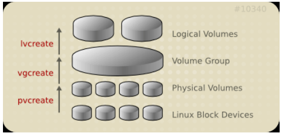
第一个逻辑卷对应设备名： /dev/dm-#
dm: device mapper，将一个或多个底层块设备组织成一个逻辑设备的模块
软链接：
- /dev/mapper/VG_NAME-LV_NAME
- /dev/VG_NAME/LV_NAME
范例
/dev/mapper/vol0-root /dev/vol0/root
实现逻辑卷
相关工具来自于 lvm2 包
[root@centos8 ~]#yum -y install lvm2
pv管理工具
显示pv信息
pvs：简要pv信息显示 pvdisplay
创建pv
pvcreate /dev/DEVICE
删除pv
pvremove /dev/DEVICE
vg管理工具
显示卷组
vgs vgdisplay
创建卷组
vgcreate [-s #[kKmMgGtTpPeE]] VolumeGroupName PhysicalDevicePath [PhysicalDevicePath...]
管理卷组
vgextend VolumeGroupName PhysicalDevicePath [PhysicalDevicePath...] vgreduce VolumeGroupName PhysicalDevicePath [PhysicalDevicePath...]
删除卷组
- 先做pvmove
- 再做vgremove
lv管理工具
显示逻辑卷
lvs Lvdisplay
创建逻辑卷
lvcreate -L #[mMgGtT] -n NAME VolumeGroup
范例：
lvcreate -l 60%VG -n mylv testvg lvcreate -l 100%FREE -n yourlv testvg
删除逻辑卷
lvremove /dev/VG_NAME/LV_NAME
重设文件系统大小
fsadm [options] resize device [new_size[BKMGTEP]] resize2fs [-f] [-F] [-M] [-P] [-p] device [new_size] xfs_growfs /mountpoint
范例：
#创建物理卷 pvcreate /dev/sda3 #为卷组分配物理卷 vgcreate vg0 /dev/sda3 #从卷组创建逻辑卷 lvcreate -L 256M -n data vg0 #mkfs.xfs /dev/vg0/data #挂载 mount /dev/vg0/data /mnt/data#
扩展和缩减逻辑卷
- 在线扩展逻辑卷
lvextend -L [+]#[mMgGtT] /dev/VG_NAME/LV_NAME #针对ext resize2fs /dev/VG_NAME/LV_NAME #针对xfs xfs_growfs MOUNTPOINT lvresize -r -l +100%FREE /dev/VG_NAME/LV_NAME
- 缩减逻辑卷
注意：缩减有数据损坏的风险，建议先备份再缩减，xfs文件系统不支持缩减
umount /dev/VG_NAME/LV_NAME e2fsck -f /dev/VG_NAME/LV_NAME resize2fs /dev/VG_NAME/LV_NAME #[mMgGtT] lvreduce -L [-]#[mMgGtT] /dev/VG_NAME/LV_NAME mount
范例：
[root@centos8 ~]#blkid /dev/vg0/mysql /dev/vg0/mysql: UUID="94674607-2196-4015-9194-4632ac23f36a" TYPE="ext4" [root@centos8 ~]#lvs LV VG Attr LSize Pool Origin Data% Meta% Move Log Cpy%Sync Convert mysql vg0 -wi-a----- 2.99g [root@centos8 ~]#df Filesystem 1K-blocks Used Available Use% Mounted on devtmpfs 391676 0 391676 0% /dev tmpfs 408092 0 408092 0% /dev/shm tmpfs 408092 5792 402300 2% /run tmpfs 408092 0 408092 0% /sys/fs/cgroup /dev/sda2 104806400 2274504 102531896 3% / /dev/sda3 52403200 398576 52004624 1% /data /dev/sda1 999320 130848 799660 15% /boot tmpfs 81616 0 81616 0% /run/user/0 /dev/mapper/vg0-mysql 3022704 9204 2840240 1% /data/mysql #第一步 [root@centos8 ~]#umount /data/mysql [root@centos8 ~]#resize2fs /dev/vg0/mysql 1G resize2fs 1.44.6 (5-Mar-2019) Please run 'e2fsck -f /dev/vg0/mysql' first. #第二步 [root@centos8 ~]#fsck -f /dev/vg0/mysql fsck from util-linux 2.32.1 e2fsck 1.44.6 (5-Mar-2019) Pass 1: Checking inodes, blocks, and sizes Pass 2: Checking directory structure Pass 3: Checking directory connectivity Pass 4: Checking reference counts Pass 5: Checking group summary information /dev/mapper/vg0-mysql: 14/196224 files (0.0% non-contiguous), 31009/784384 blocks #第三步 [root@centos8 ~]#resize2fs /dev/vg0/mysql 1G resize2fs 1.44.6 (5-Mar-2019) Resizing the filesystem on /dev/vg0/mysql to 262144 (4k) blocks. The filesystem on /dev/vg0/mysql is now 262144 (4k) blocks long. [root@centos8 ~]#lvs LV VG Attr LSize Pool Origin Data% Meta% Move Log Cpy%Sync Convert mysql vg0 -wi-a----- 2.99g [root@centos8 ~]#df Filesystem 1K-blocks Used Available Use% Mounted on devtmpfs 391676 0 391676 0% /dev tmpfs 408092 0 408092 0% /dev/shm tmpfs 408092 5792 402300 2% /run tmpfs 408092 0 408092 0% /sys/fs/cgroup /dev/sda2 104806400 2274504 102531896 3% / /dev/sda3 52403200 398576 52004624 1% /data /dev/sda1 999320 130848 799660 15% /boot tmpfs 81616 0 81616 0% /run/user/0 [root@centos8 ~]#mount -a [root@centos8 ~]#df Filesystem 1K-blocks Used Available Use% Mounted on devtmpfs 391676 0 391676 0% /dev tmpfs 408092 0 408092 0% /dev/shm tmpfs 408092 5792 402300 2% /run tmpfs 408092 0 408092 0% /sys/fs/cgroup /dev/sda2 104806400 2274504 102531896 3% / /dev/sda3 52403200 398576 52004624 1% /data /dev/sda1 999320 130848 799660 15% /boot tmpfs 81616 0 81616 0% /run/user/0 /dev/mapper/vg0-mysql 966584 7676 890096 1% /data/mysql [root@centos8 ~]#df -h Filesystem Size Used Avail Use% Mounted on devtmpfs 383M 0 383M 0% /dev tmpfs 399M 0 399M 0% /dev/shm tmpfs 399M 5.7M 393M 2% /run tmpfs 399M 0 399M 0% /sys/fs/cgroup /dev/sda2 100G 2.2G 98G 3% / /dev/sda3 50G 390M 50G 1% /data /dev/sda1 976M 128M 781M 15% /boot tmpfs 80M 0 80M 0% /run/user/0 /dev/mapper/vg0-mysql 944M 7.5M 870M 1% /data/mysql [root@centos8 ~]#lvs LV VG Attr LSize Pool Origin Data% Meta% Move Log Cpy%Sync Convert mysql vg0 -wi-ao---- 2.99g [root@centos8 ~]#umount /data/mysql #第四步 [root@centos8 ~]#lvreduce -L 1G /dev/vg0/mysql WARNING: Reducing active logical volume to 1.00 GiB. THIS MAY DESTROY YOUR DATA (filesystem etc.) Do you really want to reduce vg0/mysql? [y/n]: y Size of logical volume vg0/mysql changed from 2.99 GiB (766 extents) to 1.00 GiB (256 extents). Logical volume vg0/mysql successfully resized. #第五步 [root@centos8 ~]#mount -a [root@centos8 ~]#lvs LV VG Attr LSize Pool Origin Data% Meta% Move Log Cpy%Sync Convert mysql vg0 -wi-ao---- 1.00g [root@centos8 ~]#df -h Filesystem Size Used Avail Use% Mounted on devtmpfs 383M 0 383M 0% /dev tmpfs 399M 0 399M 0% /dev/shm tmpfs 399M 5.7M 393M 2% /run tmpfs 399M 0 399M 0% /sys/fs/cgroup /dev/sda2 100G 2.2G 98G 3% / /dev/sda3 50G 390M 50G 1% /data /dev/sda1 976M 128M 781M 15% /boot tmpfs 80M 0 80M 0% /run/user/0 /dev/mapper/vg0-mysql 944M 7.5M 870M 1% /data/mysql
跨主机迁移卷组
源计算机上 1 在旧系统中，umount所有卷组上的逻辑卷 2 禁用卷组
vgchange –a n vg0 lvdisplay
3 导出卷组
vgexport vg0 pvscan vgdisplay
4 拆下旧硬盘在目标计算机上,并导入卷组：
vgimport vg0
5 启用
vgchange –ay vg0
6 mount 所有卷组上的逻辑卷
逻辑卷快照
逻辑卷快照原理
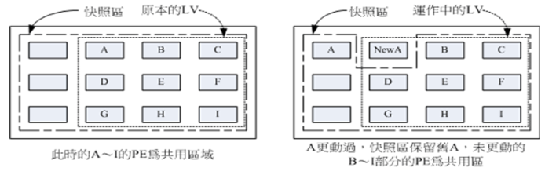
快照是特殊的逻辑卷，它是在生成快照时存在的逻辑卷的准确拷贝,对于需要备 份或者复制的现有数据临时拷贝以及其它操作来说，快照是最合适的选择,快照 只有在它们和原来的逻辑卷不同时才会消耗空间，建立快照的卷大小小于等于原 始逻辑卷,也可以使用lvextend扩展快照
逻辑卷管理器快照
快照就是将当时的系统信息记录下来，就好像照相一般，若将来有任何数据改动 了，则原始数据会被移动到快照区，没有改动的区域则由快照区和文件系统共享
逻辑卷快照工作原理
- 在生成快照时会分配给它一定的空间，但只有在原来的逻辑卷或者快照有所改变才会使用这些空间
- 当原来的逻辑卷中有所改变时，会将旧的数据复制到快照中
- 快照中只含有原来的逻辑卷中更改的数据或者自生成快照后的快照中更改的数据
由于快照区与原本的LV共用很多PE的区块，因此快照与被快照的LV必须在同一个 VG中.系统恢复的时候的文件数量不能高于快照区的实际容量
快照特点：
- 备份速度快，瞬间完
- 应用场景是测试环境，不能完成代替备份
- 快照后，逻辑卷的修改速度会一定有影响
实现逻辑卷快照
范例：
mkfs.xfs /dev/vg0/data mount /dev/vg0/data/ /mnt/data #为现有逻辑卷创建快照 lvcreate -l 64 -s -n data-snapshot -p r /dev/vg0/data #挂载快照 mkdir -p /mnt/snap mount -o ro /dev/vg0/data-snapshot /mnt/snap #恢复快照 umount /dev/vg0/data-snapshot umount /dev/vg0/data lvconvert --merge /dev/vg0/data-snapshot #删除快照 umount /mnt/databackup lvremove /dev/vg0/databackup
练习
- 创建一个至少有两个PV组成的大小为20G的名为testvg的VG；要求PE大小为16MB,
- 在卷组中创建大小为5G的逻辑卷testlv；挂载至/users目录 2、
- 用户archlinux，要求其家目录为/users/archlinux，而后su切换至archlinux用户，复制/etc/pam.d目录至自己的家目录
- 扩展testlv至7G，要求archlinux用户的文件不能丢失
- 收缩testlv至3G，要求archlinux用户的文件不能丢失
- 对testlv创建快照，并尝试基于快照备份数据，验证快照的功能
btrfs文件系统管理与应用
在 centos7 上叫做技术预览版。在有些企业中已经开始尝试使用了。
Btrfs文件系统简介
Btrfs透明压缩文件系统 (B-tree, Butter FS, Better FS)是一种 COW(copy-on-write式)文件系统，有着传统文件系统(ext3/4)所没有的一些特性， 如支持可写的磁盘快照(snapshots)，以及支持递归的快照(snapshots of snapshots)，支持内建磁盘阵列（RAID），支持子卷(Subvolumes)的概念，允许 在线调整文件系统大小等。
Oracle 从 2007 年前后开始研发。最重要的特性是支持COW(copy-on-write式写 时复制)机制，比就地修改文件系统有着极大的好处。主要取代ext3/ext4，但在 centos 6 上已经有了 xfs
核心特性
核心特性：
- 多物理卷至支持；btrfs可由多个底层物理卷组成；支持RAID,以及联机"添加"、"移除"，"修改"；
- 写时复制更新机制(CoW)：复制、更新及替换指针，而非就地更新；文件修改 创建复制份，路径指向复制文件，还原时指向原来文件上；
- 数据及元数据校验码机制；checksum
- 支持子卷：sub_volume，子卷实质上是一个保存文件和目录的命名的B树。它 们的inode保存在树根之树中，可以为非根用户和组所有。子卷可选设定块配 额。子卷内的所有块和文件区段都有引用计数以便做快照。和虚拟机存储的动 态扩展相似，其只按需使用设备空间，消除了许多半满的分区。用户也可用不 同的挂载选项挂载子卷，得到更灵活的安全性。
- 快照：支持快照的快照；命令：btrfs subvolume snapshot
- 透明压缩机制：传输数据自动压缩，读取时自动解压缩，不仅减小了文件的大 小，还提高了性能。
- Btrfs支持在线碎片整理。命令： btrfs filesystem defragment
注意: 在同一个磁盘上不同分区组成一个 btrfs 文件系统并无特殊意义。建议 使用多块硬盘组成 b-TREE 文件系统。
创建 b-tree 文件系统
mkfs.btrfs 命令，文件系统创建：
-L 'LABEL' : 指定卷标
-D
-m <profile> : 设置元数据属性，可以基于raid0,raid1,raid5,raid6,raid10,single,dup 创建元数据
-d <type> : 明数据是如何跨多设备存放的类型raid0,raid1,raid5,raid6,raid10,single(只存单份)
-O <feature> : 指明在格式时支持的属性
-O list-all：列出支持的feature
演示：添加 3 块物理磁盘 sdb, sdc, sdd 并做成 b-tree 文件系统
systemctl set-defaul multi-user.target 不启动图形界面 [root@node01 ~]# lsblk NAME MAJ:MIN RM SIZE RO TYPE MOUNTPOINT sdb 8:16 0 20G 0 disk sdc 8:32 0 20G 0 disk sdd 8:48 0 20G 0 disk # 将 /dev/sdb , /dev/sdc 两个设备做成 b-tree 文件系统 [root@node01 ~]# mkfs.btrfs -L mydata /dev/sdb /dev/sdc btrfs-progs v4.9.1 Label: mydata #卷标 UUID: ec5cff63-8a4f-4bce-8eb4-4bb64f85e4a7 Node size: 16384 Sector size: 4096 Filesystem size: 40.00GiB # 总空间大小 Block group profiles: Data: RAID0 2.00GiB Metadata: RAID1 1.00GiB System: RAID1 8.00MiB SSD detected: no Incompat features: extref, skinny-metadata Number of devices: 2 Devices: ID SIZE PATH 1 20.00GiB /dev/sdb 2 20.00GiB /dev/sdc
显示btr文件系统 btrfs filesystem show
[root@node01 ~]# btrfs filesystem show Label: 'mydata' uuid: ec5cff63-8a4f-4bce-8eb4-4bb64f85e4a7 Total devices 2 FS bytes used 112.00KiB devid 1 size 20.00GiB used 2.01GiB path /dev/sdb devid 2 size 20.00GiB used 2.01GiB path /dev/sdc # 使用 blkid 发现 /dev/sdb, /dev/sdc 属于同一个卷，但子卷的 UUID 不一同 [root@node01 ~]# blkid /dev/sdb /dev/sdb: LABEL="mydata" UUID="ec5cff63-8a4f-4bce-8eb4-4bb64f85e4a7" UUID_SUB="92ee4816-2fa6-4f5d-a4b5-0158af186c06" TYPE="btrfs" [root@node01 ~]# blkid /dev/sdc /dev/sdc: LABEL="mydata" UUID="ec5cff63-8a4f-4bce-8eb4-4bb64f85e4a7" UUID_SUB="2267dd05-989b-438f-a9f3-cf1e736f90bf" TYPE="btrfs"
挂载，挂载任何一个都可以
[root@node01 ~]# mkdir /mydata [root@node01 ~]# mount -t btrfs /dev/sdb /mydata/ #挂载任何一个 btrfs 卷就行。#只要blkid能识别，就不用-t btrfs指定了 [root@node01 ~]# mount /dev/sdb on /mydata type btrfs (rw,relatime,space_cache,subvolid=5,subvol=/) [root@node01 ~]# df -h /dev/sdb 40G 17M 38G 1% /mydata
透明压缩机制：
命令：mount -o compress={lzo|zlib} DEVICE MOUNT_POINT
[root@node01 ~]# umount /dev/sdb
[root@node01 ~]# mount -o compress=lzo /dev/sdb /mydata/
[root@node01 ~]# cp /etc/rc.d/init.d/functions /mydata/
[root@node01 ~]# ll /mydata/
-rw-r--r-- 1 root root 17500 Apr 28 09:40 functions
这种压缩解压缩是自动的，用户是看不到的。
btrfs 文件系统命令
[root@node01 ~]# btrfs btrfs btrfs-convert btrfs-find-root btrfs-map-logical btrfstune btrfsck btrfs-debug-tree btrfs-image btrfs-select-super btrfs-zero-log
统一命令工具btrfs，将多个命令合并了。
- btrfs-convert 动态转换文件系统
- btrfsck 文件系统检测
帮助手册 man btrfs
btrfs filesystem< subcommand> <args> 文件系统相关
属性查看： btrfs filesystem show [options] [<path>|<uuid>|<device>|label]
帮助手册 man btrfs-filesystem
-m| –mounted : 查看当前文件系统挂载情况. 如，[root@node01 ~]# btrfs filesystem show -m
- 查看已挂载文件系统空间使用情况：btrfs filesystem df [options] <path>
- 同步：btrfs filesystem sync <path>
- 磁盘碎片整理：btrfs filesystem defragment [options] <file>|<dir> [<file>|<dir>…]
动态调整大小 ：btrfs filesystem resize [devid:][+/-]<newsize>[kKmMgGtTpPeE]|[devid:]max <path>
必须挂载完后调整大小
直接调整为最大 [root@node01 ~]# btrfs filesystem resize max /mydata
指明或显示卷标 btrfs filesystem label [<dev>|<mountpoint>] [<newlabel>] 如
[root@node01 ~]# btrfs filesystem label /dev/sdb mydata
btrfs device <subcommand> <args> 设备相关
手册btrfs-device
btrfs device add [-Kf] <dev> [<dev>...] <path>新增设备
会自动添加自动执行扩展，但数据没有均衡到新设备上，这时就需要使用 btrfs balance 命令
[root@node01 ~]# btrfs device add /dev/sdd /mydata [root@node01 ~]# df -lh /dev/sdb 60G 18M 56G 1% /mydata
- btrfs device delete <dev>|<devid> [<dev>|<devid>…] <path> 移除设备
会自动行动设备上的数据到其它设备上。
如，[root@node01 ~]# btrfs device delete /dev/sdb /mydata
- btrfs device scan [(–all-devices|-d)|<device> [<device>…]] 扫描设备
- btrfs device ready <device> 转为备用状态
- btrfs device stats [options] <path>|<device> 显示 IO 统计数据
btrfs balance <subcommand> <args> 数据平衡
- btrfs balance start [options] <path> 在线实现块移动
子命令
-d[<filters>] 修改数据的组织机制
-m[<filters>] 修改元数据组织机制
-s[<filters>] 修改系统的组织机制
Profile names, used in profiles and convert are one of: raid0, raid1, raid10, raid5, raid6, dup, single
- btrfs balance pause <path> 暂停
- btrfs balance cancel <path> 取消
- btrfs balance resume <path> 继续
- btrfs balance status [-v] <path> 显示状态
管理子卷和快照命令 btrfs subvolume< subcommand> [<args>]
手册 man btrfs-subvolume
A subvolume in btrfs can be accessed in two ways:
- like any other directory that is accessible to the user
- like a separately mounted filesystem (options subvol or subvolid)
子卷下的文件都可以通过父卷访问到
btrfs subvolume create [-i <qgroupid>] [<dest>/]<name> 创建子卷
如在mydata 卷下创建logs子卷，[root@node01 ~]# btrfs subvolume create /mydata/logs
挂载时使用subvol subvolid 挂载，如 mount -o subvol=logs /dev/sdb /mnt 或 mount -o subvolid=264 /dev/sdb /mnt
mount -o subvol=logs /dev/sdb /mnt/log –mkdir
- btrfs subvolume delete [options] <subvolume> [<subvolume>…] 删除子卷
- btrfs subvolume list [options] [-G [+|-]<value>] [-C [+|-]<value>] [–sort=rootid,gen,ogen,path] <path> 列出所有子卷
- btrfs subvolume snapshot [-r] <source> <dest>|[<dest>/]<name> 做快照快照卷必须与原卷在一个卷组中
- btrfs subvolume get-default <path> 查看默认卷
- btrfs subvolume set-default <id> <path> 设置默认卷
- btrfs subvolume show <path> 查看子卷信息
设备管理命令
命令：btrfs device< subcommand> <args>
块组均衡管理
命令：btrfs [filesystem] balance <subcommand>|<args>
btrfs scrub 用来擦除数据
btrfs rescue 紧急救援
btrfs restore 修复模式
范例： 动态调整大小 ：btrfs filesystem resize [devid:][+/-]<newsize>[kKmMgGtTpPeE]|[devid:]max <path>
必须挂载完后调整大小
[root@node01 ~]# btrfs filesystem show /mydata [root@node01 ~]# btrfs filesystem resize -10G /mydata Resize '/mydata' of '-10G' [root@node01 ~]# df -h # 可以看到原本 40G 变成了 30G /dev/sdb 30G 18M 18G 1% /mydata [root@node01 ~]# btrfs filesystem resize +5G /mydata Resize '/mydata' of '+5G' [root@node01 ~]# df -h /dev/sdb 35G 18M 28G 1% /mydata # 查看真正的可用空间使用 btrfs 自带的 df 命令 [root@node01 ~]# btrfs filesystem df /mydata Data, RAID0: total=2.00GiB, used=780.00KiB System, RAID1: total=8.00MiB, used=16.00KiB Metadata, RAID1: total=1.00GiB, used=112.00KiB GlobalReserve, single: total=16.00MiB, used=0.00B # 直接调整为最大 [root@node01 ~]# btrfs filesystem resize max /mydata [root@node01 ~]# btrfs filesystem usage -h /mydata Overall: Device size: 40.00GiB Device allocated: 4.02GiB Device unallocated: 35.98GiB Device missing: 0.00B Used: 1.01MiB Free (estimated): 37.98GiB (min: 19.99GiB) Data ratio: 1.00 Metadata ratio: 2.00 Global reserve: 16.00MiB (used: 0.00B) Data,RAID0: Size:2.00GiB, Used:780.00KiB /dev/sdb 1.00GiB /dev/sdc 1.00GiB Metadata,RAID1: Size:1.00GiB, Used:112.00KiB /dev/sdb 1.00GiB /dev/sdc 1.00GiB System,RAID1: Size:8.00MiB, Used:16.00KiB /dev/sdb 8.00MiB /dev/sdc 8.00MiB Unallocated: /dev/sdb 17.99GiB /dev/sdc 17.99GiB
范例： btrfs device add [-Kf] <dev> [<dev>…] <path> 新增设备
会自动添加自动执行扩展，但数据没有均衡到新设备上，这时就需要使用 btrfs balance 命令
[root@node01 ~]# btrfs device add /dev/sdd /mydata
[root@node01 ~]# df -lh
/dev/sdb 60G 18M 56G 1% /mydata
[root@node01 ~]# btrfs balance start /mydata
WARNING:
Full balance without filters requested. This operation is very
intense and takes potentially very long. It is recommended to
use the balance filters to narrow down the balanced data.
Use 'btrfs balance start --full-balance' option to skip this
warning. The operation will start in 10 seconds.
范例 btrfs device delete <dev>|<devid> [<dev>|<devid>…] <path> 移除设备
会自动行动设备上的数据到其它设备上。
[root@node01 ~]# btrfs device delete /dev/sdb /mydata
[root@node01 ~]# df -lh
/dev/sdc 40G 18M 38G 1% /mydata
[root@node01 ~]# btrfs filesystem show /mydata
Label: 'mydata' uuid: ec5cff63-8a4f-4bce-8eb4-4bb64f85e4a7
Total devices 2 FS bytes used 908.00KiB
devid 2 size 20.00GiB used 2.03GiB path /dev/sdc
devid 3 size 20.00GiB used 2.03GiB path /dev/sdd
范例 btrfs balance start [options] <path> 在线实现块移动，并修改数据的组织机制为 raid5
子命令 -d[<filters>] 修改数据的组织机制
[root@node01 ~]# btrfs device add /dev/sdb /mydata
[root@node01 ~]# btrfs balance start /mydata
[root@node01 ~]# btrfs filesystem show /mydata
devid 2 size 20.00GiB used 1.03GiB path /dev/sdc
devid 3 size 20.00GiB used 2.00GiB path /dev/sdd
devid 4 size 20.00GiB used 2.03GiB path /dev/sdb
[root@node01 ~]# btrfs balance start -dconvert=raid5 /mydata
Done, had to relocate 1 out of 3 chunks
范例 如在mydata 卷下创建子卷并挂载子卷到 /mnt 下，btrfs subvolume create [-i <qgroupid>] [<dest>/]<name> 创建子卷
[root@node01 ~]# btrfs subvolume show /mydata [root@node01 ~]# btrfs subvolume create /mydata/logs Create subvolume '/mydata/logs' [root@node01 ~]# btrfs subvolume show /mydata /mydata Name: <FS_TREE> UUID: - Parent UUID: - Received UUID: - Creation time: - Subvolume ID: 5 Generation: 86 Gen at creation: 0 Parent ID: 0 Top level ID: 0 Flags: - Snapshot(s): logs [root@node01 ~]# btrfs subvolume list /mydata ID 264 gen 86 top level 5 path logs 可以看到 logs 子卷对应的 id 号为264 [root@node01 ~]# btrfs subvolume create /mydata/cache [root@node01 ~]# btrfs subvolume list /mydata ID 264 gen 86 top level 5 path logs ID 265 gen 87 top level 5 path cache 挂载子卷 [root@node01 ~]# umount /mydata [root@node01 ~]# mount -o subvol=logs /dev/sdb /mnt [root@node01 ~]# ls /mnt [root@node01 ~]# cp /var/log/messages /mnt [root@node01 ~]# ls /mnt/ messages [root@node01 ~]# btrfs subvolume show /mnt /mnt Name: logs UUID: e684c81d-c907-b841-895a-08ce66f3ea0f Parent UUID: - Received UUID: - Creation time: 2018-05-07 07:01:23 +0800 Subvolume ID: 264 Generation: 89 Gen at creation: 86 Parent ID: 5 Top level ID: 5 Flags: - Snapshot(s): 子卷下的文件都可以通过父卷访问到 [root@node01 ~]# umount /mnt [root@node01 ~]# mount /dev/sdb /mydata [root@node01 ~]# ls /mydata/logs messages 删除子卷 [root@node01 ~]# btrfs subvolume delete /mydata/logs [root@node01 ~]# btrfs subvolume list /mydata/ ID 265 gen 87 top level 5 path cache
演示6 创建子卷快照 btrfs subvolume snapshot [-r] <source> <dest>|[<dest>/]<name> 做快照
快照卷必须与原卷在一个卷组中
[root@node01 ~]# btrfs subvolume create /mydata/logs [root@node01 ~]# cp /etc/grub2.cfg /mydata/logs/ [root@node01 ~]# btrfs subvolume snapshot /mydata/logs /mydata/logs_snapshot [root@node01 ~]# btrfs subvolume list /mydata/logs ID 265 gen 87 top level 5 path cache ID 266 gen 95 top level 5 path logs ID 267 gen 95 top level 5 path logs_snapshot [root@node01 ~]# btrfs subvolume delete /mydata/logs_snapshot cp 命令可以单独为文件创建快照 [root@node01 logs]# cp --reflink=auto grub2.cfg grub2.cfg_snap [root@node01 logs]# vim grub2.cfg [root@node01 logs]# vim grub2.cfg_snap
范例 ext4 文件系统转换为 btrfs 系统
[root@node01 ~]# btrfs balance start -dconvert=single -mconvert=raid1 /mydata 拆除一个设备并转换为ext4 系统 [root@node01 ~]# btrfs device delete /dev/sdd /mydata [root@node01 ~]# fdisk /dev/sdd Command (m for help): n Select (default p): p Partition number (1-4, default 1): First sector (2048-41943039, default 2048): Last sector, +sectors or +size{K,M,G} (2048-41943039, default 41943039): Command (m for help): w [root@node01 ~]# mke2fs -t ext4 /dev/sdd1 [root@node01 ~]# mount /dev/sdd1 /mnt [root@node01 ~]# cp /etc/fstab /mnt 转换为 btrfs系统 [root@node01 ~]# umount /mnt [root@node01 ~]# fsck -f /dev/sdd1 [root@node01 ~]# btrfs-convert /dev/sdd1 conversion complete[root@node01 ~]# btrfs filesystem show Label: 'mydata' uuid: ec5cff63-8a4f-4bce-8eb4-4bb64f85e4a7 Total devices 2 FS bytes used 496.00KiB devid 2 size 20.00GiB used 1.28GiB path /dev/sdc devid 4 size 20.00GiB used 288.00MiB path /dev/sdb Label: none uuid: d0092458-52ea-4a27-be4f-4a47840fe0dd Total devices 1 FS bytes used 494.20MiB devid 1 size 20.00GiB used 808.29MiB path /dev/sdd1 # 将btrfs文件系统回滚原来的文件系统 [root@node01 ~]# btrfs-convert -r /dev/sdd1 [root@node01 ~]# blkid /dev/sdd1 /dev/sdd1: UUID="a25e7670-2b48-4a69-a520-e9051e9dba99" TYPE="ext4"
范例：
1、创建btrfs文件系统
在vmware中新增两块20G磁盘，/dev/sdb与/dev/sdc
[root@localhost ~]# mkfs.btrfs -L 'B-tree-fs' -f /dev/sd{b,c}
[root@localhost ~]# btrfs filesystem show
Label: 'B-tree-fs' uuid: b254b565-0418-4601-8317-f9a5306c6f19
Total devices 2 FS bytes used 112.00KiB
devid 1 size 20.00GiB used 2.03GiB path /dev/sdb
devid 2 size 20.00GiB used 2.01GiB path /dev/sdc
2、挂载文件系统
[root@localhost ~]# mkdir /btrdata
[root@localhost ~]# mount /dev/sdb /btrdata
[root@localhost ~]# df -h | grep btrdata
/dev/sdb 40G 1.0M 38G 1% /btrdata
3、建立子卷
[root@localhost ~]# btrfs subvolume create /btrdata/mydata
Create subvolume '/btrdata/mydata'
[root@localhost ~]# cp -r /root/* /btrdata/mydata # 复制数据
[root@localhost ~]# btrfs filesystem show
Label: 'B-tree-fs' uuid: b254b565-0418-4601-8317-f9a5306c6f19
Total devices 2 FS bytes used 735.67MiB
devid 1 size 20.00GiB used 2.03GiB path /dev/sdb
devid 2 size 20.00GiB used 2.01GiB path /dev/sdc
4、扩展文件系统
[root@localhost ~]# btrfs device add /dev/sdd /btrdata
[root@localhost ~]# btrfs filesystem show
Label: 'B-tree-fs' uuid: b254b565-0418-4601-8317-f9a5306c6f19
Total devices 3 FS bytes used 735.67MiB
devid 1 size 20.00GiB used 2.03GiB path /dev/sdb
devid 2 size 20.00GiB used 2.01GiB path /dev/sdc
devid 3 size 20.00GiB used 0.00 path /dev/sdd
[root@localhost ~]# df -h | grep btrdata
/dev/sdb 60G 772M 56G 2% /btrdata
5、重新均衡文件系统
[root@localhost ~]# btrfs balance start /btrdata
Done, had to relocate 6 out of 6 chunks
[root@localhost ~]# btrfs filesystem show
Label: 'B-tree-fs' uuid: b254b565-0418-4601-8317-f9a5306c6f19
Total devices 3 FS bytes used 736.20MiB
devid 1 size 20.00GiB used 1.03GiB path /dev/sdb
devid 2 size 20.00GiB used 2.00GiB path /dev/sdc
devid 3 size 20.00GiB used 2.03GiB path /dev/sdd
6、移除硬盘
移除硬盘的时候会先把数据移动到其他盘，不需要像LVM那样需要手动移动数据
[root@localhost ~]# btrfs device delete /dev/sdb /btrdata
[root@localhost ~]# df -h | grep btrdata
/dev/sdc 40G 772M 38G 2% /btrdata
[root@localhost ~]# ls /btrdata/
commdir mydata
[root@localhost ~]# head /btrdata/mydata/anaconda-ks.cfg
#version=RHEL7
# System authorization information
auth --enableshadow --passalgo=sha512
# Use CDROM installation media
cdrom
# Use graphical install
graphical
# Run the Setup Agent on first boot
firstboot --enable
7、修改数据或元数据的RAID级别
[root@localhost ~]# btrfs device add /dev/sdb /btrdata
[root@localhost ~]# btrfs filesystem df /btrdata
Data, RAID0: total=2.00GiB, used=699.96MiB
System, RAID1: total=32.00MiB, used=16.00KiB
Metadata, RAID1: total=1.00GiB, used=35.98MiB
GlobalReserve, single: total=16.00MiB, used=0.00
[root@localhost ~]# btrfs balance start -mconvert=raid5 /btrdata # 此处修改元数据RAID级别
Done, had to relocate 2 out of 3 chunks
[root@localhost ~]# btrfs filesystem df /btrdata
Data, RAID0: total=2.00GiB, used=700.21MiB
System, RAID5: total=64.00MiB, used=16.00KiB
Metadata, RAID5: total=1.00GiB, used=35.91MiB
GlobalReserve, single: total=16.00MiB, used=0.00
[root@localhost ~]# btrfs filesystem show
Label: 'B-tree-fs' uuid: b254b565-0418-4601-8317-f9a5306c6f19
Total devices 3 FS bytes used 735.89MiB
devid 2 size 20.00GiB used 1.53GiB path /dev/sdc
devid 3 size 20.00GiB used 1.53GiB path /dev/sdd
devid 4 size 20.00GiB used 544.00MiB path /dev/sdb
8、创建快照
[root@localhost ~]# btrfs subvolume snapshot /btrdata/mydata /btrdata/mydata_snapshot
Create a snapshot of '/btrdata/mydata' in '/btrdata/mydata_snapshot'
[root@localhost ~]# cat /btrdata/mydata/1.txt
1
[root@localhost ~]# echo 'just a test' >> /btrdata/mydata/1.txt
[root@localhost ~]# cat /btrdata/mydata/1.txt
1
just a test
[root@localhost ~]# cat /btrdata/mydata_snapshot/1.txt
1
9、转换
[root@localhost ~]# btrfs balance start -dconvert=single -mconvert=raid1 /btrdata
Done, had to relocate 3 out of 3 chunks
[root@localhost ~]# btrfs device delete /dev/sdd /btrdata
[root@localhost ~]# fdisk /dev/sdd
Welcome to fdisk (util-linux 2.23.2).
Changes will remain in memory only, until you decide to write them.
Be careful before using the write command.
Device does not contain a recognized partition table
Building a new DOS disklabel with disk identifier 0xadd41340.
Command (m for help): n
Partition type:
p primary (0 primary, 0 extended, 4 free)
e extended
Select (default p): p
Partition number (1-4, default 1): 1
First sector (2048-41943039, default 2048):
Using default value 2048
Last sector, +sectors or +size{K,M,G} (2048-41943039, default 41943039): +5G
Partition 1 of type Linux and of size 5 GiB is set
Command (m for help): w
The partition table has been altered!
Calling ioctl() to re-read partition table.
Syncing disks.
[root@localhost ~]# mke2fs -t ext4 /dev/sdd1
mke2fs 1.42.9 (28-Dec-2013)
Filesystem label=
OS type: Linux
Block size=4096 (log=2)
Fragment size=4096 (log=2)
Stride=0 blocks, Stripe width=0 blocks
327680 inodes, 1310720 blocks
65536 blocks (5.00%) reserved for the super user
First data block=0
Maximum filesystem blocks=1342177280
40 block groups
32768 blocks per group, 32768 fragments per group
8192 inodes per group
Superblock backups stored on blocks:
32768, 98304, 163840, 229376, 294912, 819200, 884736
Allocating group tables: done
Writing inode tables: done
Creating journal (32768 blocks): done
Writing superblocks and filesystem accounting information: done
[root@localhost ~]# fsck -f /dev/sdd1
fsck from util-linux 2.23.2
e2fsck 1.42.9 (28-Dec-2013)
Pass 1: Checking inodes, blocks, and sizes
Pass 2: Checking directory structure
Pass 3: Checking directory connectivity
Pass 4: Checking reference counts
Pass 5: Checking group summary information
/dev/sdd1: 12/327680 files (0.0% non-contiguous), 58463/1310720 blocks
[root@localhost ~]# btrfs-convert /dev/sdd1 # 将ext4文件系统转换为btrfs
creating btrfs metadata.
creating ext2fs image file.
cleaning up system chunk.
conversion complete.
[root@localhost ~]# btrfs filesystem show
Label: 'B-tree-fs' uuid: b254b565-0418-4601-8317-f9a5306c6f19
Total devices 2 FS bytes used 735.81MiB
devid 2 size 20.00GiB used 2.03GiB path /dev/sdc
devid 4 size 20.00GiB used 1.03GiB path /dev/sdb
Label: none uuid: 12170ec7-9847-4a5a-85ee-13215a478a3c
Total devices 1 FS bytes used 228.42MiB
devid 1 size 5.00GiB used 5.00GiB path /dev/sdd1
Btrfs v3.16.2
[root@localhost ~]# btrfs-convert -r /dev/sdd1 # 将btrfs文件系统回滚原来的文件系统
rollback complete.
[root@localhost ~]# blkid /dev/sdd1
/dev/sdd1: UUID="fbbd653f-fb3f-4715-8c42-8c942564c8f4" TYPE="ext4"
ISO制作
准备工作
目录说明
- /home/emacle/script目录为脚本存放目录。
- /home/emacle/emacle_rhel_6.3 目录为ISO制作的根目录。
此目录组成为：
- 源rhel_6.3光盘中除Packages目录下所有安装包。
- 手动安装操作系统中/root/anaconda-ks.cfg文件。之后会对此文件做定制化修改。
- 从手动安装操作系统中/root/install.log文件中提取所有安装的rpm包放到Packages目录下。
- 在从手动安装操作系统中安装所有应用程序。把下载的rpm包放到Packages目录下。
- 把所有需要编译安装的源码包和不能通过rpm安装的程序文件打成一个rpm包，放到Packages目录下。
安装createrepo包
配置文件修改
修改/home/emacle/emacle_rhel_6.3/anaconda-ks.cfg配置文件
此文件为自动安装脚本文件。内容如下：
# Kickstart file automatically generated by anaconda. #version=DEVEL install text cdrom lang en_US.UTF-8 keyboard us network --onboot no --device eth0 --bootproto dhcp --noipv6 rootpw --iscrypted $6$ksiYu.rXVzFbCNNi$7Q9ho0VOQlSMDTZj.xrJHwL6MVEJ3e5CH/Ko3V834XHQQfHEHmGj04QmzuciR.ufrAxYRGuWO6SfR/RyeOM6j1 firewall --disabled authconfig --enableshadow --passalgo=sha512 selinux --disabled timezone --utc Asia/Shanghai bootloader --location=mbr --driveorder=sda --append="crashkernel=auto rhgb quiet" # The following is the partition information you requested # Note that any partitions you deleted are not expressed # here so unless you clear all partitions first, this is # not guaranteed to work #clearpart --none #part /boot --fstype=ext4 --size=128 #part swap --size=1024 #part / --fstype=ext4 --grow --size=200 %packages @additional-devel @base @chinese-support @client-mgmt-tools @console-internet @core @debugging @desktop-platform-devel @development @directory-client @eclipse @hardware-monitoring @java-platform @large-systems @network-file-system-client @performance @perl-runtime @server-platform @server-platform-devel @server-policy @system-admin-tools libXinerama-devel openmotif-devel libXmu-devel xorg-x11-proto-devel startup-notification-devel libgnomeui-devel libbonobo-devel junit libXau-devel libgcrypt-devel popt-devel libdrm-devel libXrandr-devel libxslt-devel libglade2-devel gnutls-devel pax python-dmidecode oddjob sgpio mtools systemtap-client desktop-file-utils ant rpmdevtools jpackage-utils rpmlint certmonger pam_krb5 krb5-workstation perl-DBD-SQLite #app appserver webstatic user_platform search tpush privacycloud_scripts # nginx nginx_config mongo-10gen mongo-10gen-server redis rabbitmq-server td-agent emacle-config # %post ###sysinfo.log useradd emacle echo emacle2013 | passwd --stdin emacle >/dev/null 2>&1 chmod 755 /home/emacle CUR_PWD="/usr/local/software" PATH=${PATH}:/usr/local/bin export CUR_PWD PATH # cat >>/etc/security/limits.conf <<\EOF emacle soft nproc 65535 emacle hard nproc 65535 emacle soft nofile 65535 emacle hard nofile 65535 EOF # sed -i 's/SELINUX=enforcing/SELINUX=disabled/g' /etc/selinux/config sed -i 's/^exclude/#exclude/' /etc/yum.conf setenforce 0 >/dev/null 2>&1 iptables -F #yum yum makecache yum -q -y install yum-fastestmirror yum -q -y install gcc gcc-c++ libtool make cmake autoconf automake yum -q -y groupinstall 'Additional Development' 'Security Tools' 'Development tools' ### Install ntp ### yum -q -y install ntp ntpdate -u pool.ntp.org hwclock -w chkconfig ntpd on service ntpd restart >/dev/null 2>&1 service ntpd restart >/dev/null 2>&1 #service_test ### Install openssh ### yum -q -y install openssh chkconfig sshd on sed -i 's/#UseDNS yes/UseDNS no/' /etc/ssh/sshd_config service sshd restart >/dev/null 2>&1 service sshd restart >/dev/null 2>&1 #service_test #install_app.sh mkdir -p /tmp_ram chown -R emacle:emacle /tmp_ram mkdir /home/emacle/logs chown -R emacle:emacle /home/emacle/logs #install_nginx.sh chown emacle.emacle -R /home/emacle/services #install_mongodb.sh mv /etc/init.d/mongod /etc/init.d/mongod.bak mkdir -p /data/mongodb/{data,log,config,arbiter} chown mongod -R /data/mongodb #install_redis.sh sed -i 's/bind 127.0.0.1/#bind 127.0.0.1/' /etc/redis.conf cp /etc/redis.conf /etc/redis6380.conf sed -i 's!pidfile /var/run/redis/redis.pid!#pidfile /var/run/redis/redis6380.pid!' /etc/redis6380.conf sed -i 's!port 6379!port 6380!' /etc/redis6380.conf sed -i 's!logfile /var/log/redis/redis.log!logfile /var/log/redis/redis6380.log!' /etc/redis6380.conf grep 'vm.overcommit_memory = 1' /etc/sysctl.conf >/dev/null 2>&1 || echo 'vm.overcommit_memory = 1' >> /etc/sysctl.conf #install_rabbitmq.sh HOST=$(hostname | awk -F'.' '{print $1}') grep "127.0.0.1\ \+$HOST" /etc/hosts >/dev/null || echo "127.0.0.1 $HOST" >> /etc/hosts #install_fluentd.sh tar xf /usr/local/software/conf.d/fluentd.tar.gz -C / mkdir -p /home/emacle/tmp chown td-agent /home/emacle/tmp #install_jdk.sh bash /usr/local/software/soft/jdk-6u45-linux-x64.bin >/dev/null 2>&1 mv jdk1.6.0_45 /usr/local/ cat >>/etc/profile <<\EOF JAVAHOME=/usr/local/jdk1.6.0_45/bin PATH=${PATH}:${JAVAHOME} export PATH JAVAHOME EOF #install_hadoop.sh mkdir -p /home/emacle/app tar xf /usr/local/software/soft/hadoop-1.0.4.tar.gz -C /home/emacle/app/ tar xf /usr/local/software/conf.d/hadoop.tar.gz -C /home/emacle/app/hadoop-1.0.4 \cp -r /usr/local/software/soft/.ssh ~emacle mkdir -p /home/emacle/app/hadoop-1.0.4/data/hadoop/{name,data,tmp} chown emacle.emacle -R /home/emacle/app #install_python.sh # install rpm ### yum -y -q install zlib zlib-devel openssl openssl-deval freetype freetype-devel libxml2 libxml2-devel libxslt libxslt-devel rpm -ivh ${CUR_PWD}/soft/mysql-5.1.61-4.el6.x86_64.rpm rpm -ivh ${CUR_PWD}/soft/mysql-devel-5.1.61-4.el6.x86_64.rpm InstallLog="${CUR_PWD}/install.log" PythonDir="${CUR_PWD}/soft/python/" cd $PythonDir && rm -rf Python-2.7.3 pip-1.0 tar jxvf Python-2.7.3.tar.bz2 cd Python-2.7.3 ./configure -q make -s all make -s install make clean make distclean mv /usr/bin/python /usr/bin/python2.6.6 ln -s /usr/local/bin/python2.7 /usr/bin/python sed -i '1s@^#!/usr/bin/python@#!/usr/bin/python2.6.6@' /usr/bin/yum cd $PythonDir chmod 775 setuptools-0.6c11-py2.7.egg sh setuptools-0.6c11-py2.7.egg tar xvfz pip-1.0.tar.gz cd pip-1.0 python setup.py install #chown emacle.emacle -R /home/emacle ### /Install python ### ### configuration python env ### mkdir -p /home/emacle/python_dependency/source \cp -r ${PythonDir}/source/* /home/emacle/python_dependency/source/ pip install /home/emacle/python_dependency/source/virtualenv-1.9.1.tar.gz #mkdir -p /home/emacle/services #\cp -r ${PythonDir}/user_platform /home/emacle/services cd /home/emacle/services /usr/local/bin/virtualenv --distribute env cd /home/emacle/services/user_platform ( /home/emacle/services/env/bin/easy_install /home/emacle/python_dependency/source/pytz-2013b-py2.7.egg /home/emacle/services/env/bin/easy_install /home/emacle/python_dependency/source/flup-1.0.3.dev_20110405-py2.7.egg /home/emacle/services/env/bin/pip install /home/emacle/python_dependency/source/distribute-0.6.45.tar.gz /home/emacle/services/env/bin/easy_install /home/emacle/python_dependency/source/Babel-0.9.6-py2.7.egg /home/emacle/services/env/bin/pip install /home/emacle/python_dependency/source/captchaimage-1.3.tar.gz /home/emacle/services/env/bin/pip install /home/emacle/python_dependency/source/chardet-2.1.1.tar.gz /home/emacle/services/env/bin/pip install /home/emacle/python_dependency/source/gdata-2.0.18.zip /home/emacle/services/env/bin/pip install /home/emacle/python_dependency/source/lxml-3.2.1.tar.gz /home/emacle/services/env/bin/pip install /home/emacle/python_dependency/source/nose-1.3.0.tar.gz /home/emacle/services/env/bin/pip install /home/emacle/python_dependency/source/pika-0.9.13.tar.gz /home/emacle/services/env/bin/pip install /home/emacle/python_dependency/source/Imaging-1.1.7.tar.gz /home/emacle/services/env/bin/pip install /home/emacle/python_dependency/source/pycrypto-2.6.tar.gz /home/emacle/services/env/bin/pip install /home/emacle/python_dependency/source/pyDes-2.0.1.zip /home/emacle/services/env/bin/pip install /home/emacle/python_dependency/source/pydns-2.3.6.tar.gz /home/emacle/services/env/bin/pip install /home/emacle/python_dependency/source/pymongo-2.5.2.tar.gz /home/emacle/services/env/bin/pip install /home/emacle/python_dependency/source/pystache-0.5.3.tar.gz /home/emacle/services/env/bin/pip install /home/emacle/python_dependency/source/redis-2.7.6.tar.gz /home/emacle/services/env/bin/pip install /home/emacle/python_dependency/source/sendgrid-0.1.3.tar.gz /home/emacle/services/env/bin/pip install /home/emacle/python_dependency/source/SQLAlchemy-0.8.1.tar.gz /home/emacle/services/env/bin/pip install /home/emacle/python_dependency/source/suds-0.4.tar.gz /home/emacle/services/env/bin/pip install /home/emacle/python_dependency/source/xlwt-0.7.5.tar.gz /home/emacle/services/env/bin/pip install /home/emacle/python_dependency/source/mustache-0.1.4.tar.gz /home/emacle/services/env/bin/pip install /home/emacle/python_dependency/source/httpagentparser-1.2.2.tar.gz /home/emacle/services/env/bin/pip install /home/emacle/python_dependency/source/speaklater-1.3.tar.gz /home/emacle/services/env/bin/pip install /home/emacle/python_dependency/source/billiard-2.7.3.28.tar.gz /home/emacle/services/env/bin/pip install /home/emacle/python_dependency/source/anyjson-0.3.3.tar.gz /home/emacle/services/env/bin/pip install /home/emacle/python_dependency/source/amqp-1.0.12.tar.gz /home/emacle/services/env/bin/pip install /home/emacle/python_dependency/source/Werkzeug-0.9.1.tar.gz /home/emacle/services/env/bin/pip install /home/emacle/python_dependency/source/itsdangerous-0.21.tar.gz /home/emacle/services/env/bin/pip install /home/emacle/python_dependency/source/MarkupSafe-0.18.tar.gz /home/emacle/services/env/bin/pip install /home/emacle/python_dependency/source/six-1.3.0.tar.gz /home/emacle/services/env/bin/pip install /home/emacle/python_dependency/source/MySQL-python-1.2.4.zip /home/emacle/services/env/bin/pip install /home/emacle/python_dependency/source/python-dateutil-2.1.tar.gz /home/emacle/services/env/bin/pip install /home/emacle/python_dependency/source/kombu-2.5.11.tar.gz /home/emacle/services/env/bin/pip install /home/emacle/python_dependency/source/celery-3.0.19.tar.gz /home/emacle/services/env/bin/pip install /home/emacle/python_dependency/source/Jinja2-2.7.tar.gz /home/emacle/services/env/bin/pip install /home/emacle/python_dependency/source/Flask-0.9.tar.gz /home/emacle/services/env/bin/pip install /home/emacle/python_dependency/source/Flask-Babel-0.8.tar.gz /home/emacle/services/env/bin/pip install /home/emacle/python_dependency/source/Flask-PyMongo-0.2.1.tar.gz /home/emacle/services/env/bin/pip install /home/emacle/python_dependency/source/vobject-0.8.1c.tar.gz /home/emacle/services/env/bin/easy_install /home/emacle/python_dependency/source/Flask_Cache-0.12-py2.7.egg /home/emacle/services/env/bin/pip install /home/emacle/python_dependency/source/IPy-0.81.tar.gz ) > /dev/null 2>&1 chown emacle.emacle -R /home/emacle/services/env/ chown emacle.emacle -R /home/emacle/python_dependency chown emacle /var/run # td-agent require #chown td-agent:emacle /home/emacle/tmp #install_celeryd.sh if [ ! -d /etc/default ] then mkdir /etc/default fi \cp ${CUR_PWD}/soft/celeryd/celeryd /etc/init.d/ # celeryd init script \cp ${CUR_PWD}/soft/celeryd/config/celeryd /etc/default/ # celeryd config \cp ${CUR_PWD}/soft/celeryd/celeryctl /usr/bin/ # for sceleryd ervice start|stop \cp ${CUR_PWD}/soft/celeryd/celeryd-multi /usr/bin/ # for sceleryd ervice status chmod 755 /usr/bin/celeryd-multi /etc/init.d/celeryd /usr/bin/celeryctl mkdir -p /var/log/celery mkdir -p /var/run/celery chown emacle.emacle -R /var/log/celery /var/run/celery echo "/etc/init.d/celeryd start" >>/etc/rc.d/rc.local # Init consumer mkdir /var/run/consumer chown emacle.emacle /var/run/consumer #install_mysql.sh # #install_cront.sh cat /usr/local/software/soft/crontab >> /var/spool/cron/emacle #install_nconvert.sh \cp /usr/local/software/soft/nconvert /usr/bin chmod 755 /usr/bin/nconvert # ### Reset owner of file ### chown emacle.emacle -R /tmp_ram >/dev/null 2>&1 chown emacle.emacle -R /var/log/celery /var/run/celery /var/run/consumer >/dev/null 2>&1 chown td-agent:emacle -R /home/emacle/tmp >/dev/null 2>&1 chown mongod -R /data/mongodb >/dev/null 2>&1 chown emacle /var/run # chkconfig SERVICE_ON="ntpd nginx mongod redis rabbitmq-server td-agent sshd" for i in ${SERVICE_ON} do chkconfig $i on done %end
修改/home/emacle/emacle_rhel_6.3/isolinux/isolinux.cfg配置文件
此文件添加“auto”自动安装命令。内容如下：
default vesamenu.c32 #prompt 1 timeout 600 display boot.msg menu background splash.jpg menu title Welcome to Red Hat Enterprise Linux 6.3! menu color border 0 #ffffffff #00000000 menu color sel 7 #ffffffff #ff000000 menu color title 0 #ffffffff #00000000 menu color tabmsg 0 #ffffffff #00000000 menu color unsel 0 #ffffffff #00000000 menu color hotsel 0 #ff000000 #ffffffff menu color hotkey 7 #ffffffff #ff000000 menu color scrollbar 0 #ffffffff #00000000 label linux menu label ^Install or upgrade an existing system menu default kernel vmlinuz append initrd=initrd.img label vesa menu label Install system with ^basic video driver kernel vmlinuz append initrd=initrd.img xdriver=vesa nomodeset label rescue menu label ^Rescue installed system kernel vmlinuz append initrd=initrd.img rescue label local menu label Boot from ^local drive localboot 0xffff label memtest86 menu label ^Memory test kernel memtest append - label auto # 新添加一段 kernel vmlinuz append ks=cdrom:/anaconda-ks.cfg initrd=initrd.img
修改/home/emacle/script/build_iso.sh脚本
此脚本用于iso制作。
#!/bin/bash # Description: Build new iso file of emacle DATE=$(date '+%Y%m%d%H%M') ISODIR=/home/emacle/emacle_rhel_6.3 NEWRPM=/usr/src/redhat/RPMS/x86_64 SCRIPT_NAME=$(basename $0) create_iso() { rm -f /mnt/mkiso/Emacle_rhel_6.3*.iso mv ${NEWRPM}/* ${ISODIR}/Packages >/dev/null 2>&1 #Create repodata cd ${ISODIR} createrepo -g repodata/comps-rhel6-Server.xml ${ISODIR} # Create iso file mkisofs -o /mnt/mkiso/Emacle_rhel_6.3_${DATE}.iso -b isolinux/isolinux.bin -c isolinux/boot.cat -no-emul-boot -boot-load-size 4 -boot-info-table -R -J -v -T ${ISODIR} echo "Emacle_mini${DATE}.iso is created" >>/home/emacle/script/mkiso.log } echo "### ${DATE} ISO BUILDING $0 $@ command is performed" >>/home/emacle/script/mkiso.log create_iso echo "### $0 is complete" >>/home/emacle/script/mkiso.log
第一步，光盘启动。
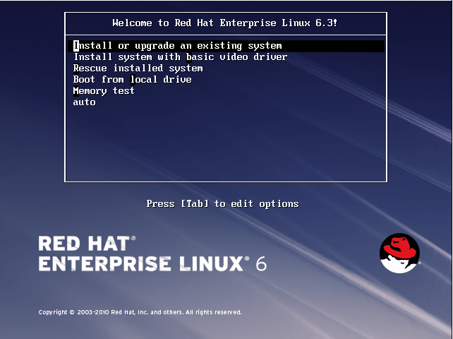
第二步，按‘ESC’调出命令行模式输入“auto”后回车。
第三步，根据实际情况选择使用磁盘空间。
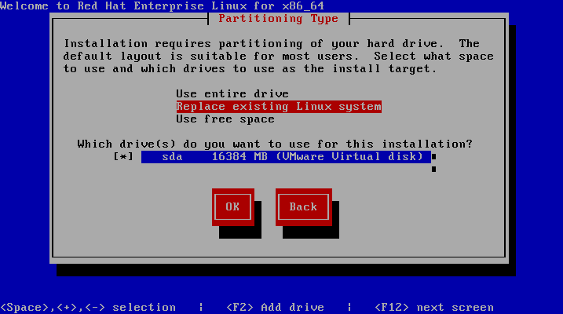
第四步，程序文件安装。
第五步，执行安装脚本。注意：此步骤时间很长，大概要30分钟。
第六步，安装完毕！按“Reboot”重启服务器。
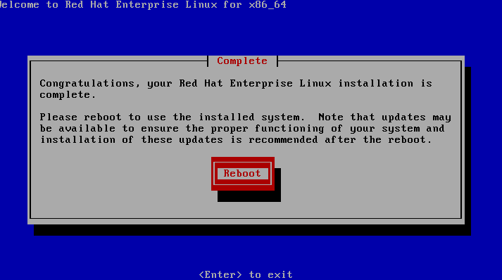